Fleta e ushtrimeve
Zgjidh PDF për shtypje ose Word për redaktim.
Hyrje në Statistikë · Tema 1
Të dhënat e papërpunuara rrallë shpjegohen vetë. Një fletëllogaritëse mund të përmbajë përgjigje pyetësorësh, kohë reagimi ose pikëzime testesh, por rreshtat me numra ende nuk tregojnë çfarë është tipike, sa shumë ndryshojnë njerëzit apo nëse një vlerë e pazakontë meriton vëmendje.
Statistika përshkruese i shndërron këto vrojtime në një pamje të parë të kuptueshme. Shqyrtojmë çfarë do të thotë secila ndryshore, organizojmë vlerat e saj, përshkruajmë qendrën dhe shpërhapjen dhe shohim formën e shpërndarjes. Një shpërndarje është modeli që formojnë vlerat e një ndryshoreje dhe shpeshtësia e tyre. Qendra përshkruan një vendndodhje tipike, shpërhapja tregon sa ndryshojnë vlerat, ndërsa forma tregon si janë vendosur ato përgjatë diapazonit të tyre.
Ky vështrim i kujdesshëm vjen para çdo përpjekjeje për të përgjithësuar ose testuar një pohim. Njerëzit, objektet ose rastet e tjera që janë vëzhguar realisht formojnë kampionin. Statistika përshkruese ndihmon të dallosh probleme në të dhëna, të zgjedhësh përmbledhje të përshtatshme për matjen dhe të shpjegosh me ndershmëri si duket kampioni. Formulat e kësaj teme i shërbejnë këtij qëllimi: ato janë mjete për të kuptuar të dhënat, jo pika e nisjes.
Pyetja udhëzuese: Si mund ta shndërrojmë një tabelë me vrojtime të papërpunuara në një pamje të qartë pa pohuar më shumë nga sa tregojnë të dhënat?
Statistika përshkruese është hapi i parë i domosdoshëm në analizën e të dhënave. Ajo tregon si duken të dhënat përpara kryerjes së një testi formal, zvogëlon rrezikun e keqinterpretimit dhe jep një pamje të ndershme të kampionit.
Në fund të kësaj teme duhet të jesh në gjendje:
Formulat statistikore janë udhëzime të ngjeshura. Leximi i tyre bëhet më i lehtë kur identifikon fillimisht veprimin dhe pastaj simbolet. Një thyesë si \(a/b\) do të thotë se i gjithë numëruesi \(a\) pjesëtohet me të gjithë emëruesin \(b\). Kllapat tregojnë cilat terma përkasin së bashku, prandaj \((x_i-\bar{x})^2\) do të thotë të zbresësh mesataren nga një vrojtim dhe pastaj ta ngresh në katror atë devijim.
Shkronja e madhe greke sigma, \(\sum\), do të thotë “mblidh një varg termash”. Në shprehjen
\[\sum_{i=1}^{n} x_i,\]
\(i\) është indeksi që ndryshon, \(i=1\) është vlera fillestare, \(n\) është vlera përfundimtare dhe \(x_i\) është termi i shumës, pra shprehja që shtohet në secilin hap. Për katër vrojtime, udhëzimi zgjerohet në \(x_1+x_2+x_3+x_4\).
Një model i thjeshtë do të na hyjë në punë më vonë. Nëse të njëjtin numër ia shtojmë çdo vrojtimi, ai numër shtohet në total një herë për çdo vrojtim. Për shembull, kur vlerave 4, 7 dhe 9 u shtojmë nga 2, marrim
\[(4+2)+(7+2)+(9+2)=(4+7+9)+3\cdot2.\]
Nuk ka nevojë të mësosh përmendësh një rregull të përgjithshëm në këtë pikë. Shembulli thotë vetëm se një ndryshim i zbatuar te çdo vlerë i ndryshon në mënyrë të parashikueshme edhe përmbledhjet si mesatarja. Pjesa për transformimet lineare i rikthehet kësaj ideje pasi të jenë bërë të njohura masat bazë përshkruese.
Dy shprehje që duken të ngjashme mund të përfaqësojnë llogaritje të ndryshme. Shprehja \(\sum_{i=1}^{n} x_i^2\) ngre secilin vrojtim në katror dhe pastaj i mbledh katrorët. Shprehja \((\sum_{i=1}^{n} x_i)^2\) i mbledh fillimisht vrojtimet dhe pastaj e ngre në katror atë total të vetëm. Për vlerat 2 dhe 3, rezultati i parë është \(2^2+3^2=13\), ndërsa i dyti është \((2+3)^2=25\).
Lexoje formulën nga veprimi më i brendshëm drejt atij më të jashtëm: identifiko secilin vrojtim, përfundo shprehjen brenda kllapave, zbato fuqitë, mblidh nëpër vrojtime dhe pjesëto në fund. Ky rend do të të ndihmojë kur të hasësh mesataret, variancat, pikëzimet z dhe, më vonë, formulat inferenciale.
Shkencat sociale dhe humane studiojnë njerëzit, bashkësitë, institucionet, tekstet dhe praktikat kulturore. Pyetjet e tyre mund të lidhen me stresin dhe kujtesën, mundësitë arsimore, pjesëmarrjen politike, përdorimin e gjuhës, kushtet e punës, migrimin ose ndryshimin e ideve në kohë. Në secilin rast, vrojtimet e regjistruara ndryshojnë. Kjo ndryshueshmëri është pjesë e vetë objektit të studimit dhe meriton një përshkrim të kujdesshëm para se të bëhet një pohim më i gjerë.
Statistika përshkruese u përgjigjet pyetjeve të tilla:
Këto pyetje të ndihmojnë të vendosësh nëse të dhënat janë të besueshme, nëse matja funksionoi siç ishte synuar dhe nëse është e përgjegjshme të kalosh te hapi tjetër analitik. Pa këtë shqyrtim, një studiues mund të raportojë se një grup është në përgjithësi më i shqetësuar, edhe pse dy ose tri vrojtime të skajshme krijuan pjesën më të madhe të dallimit. I njëjti problem shfaqet kur krahasohen shkolla, grupe anketash, periudha historike, rajone ose koleksione tekstesh.
Një analizë e kujdesshme fillon me statistikën përshkruese. Ky kuptim fillestar mbron nga interpretimi tepër i sigurt më vonë.
Ndryshueshmëria mes njerëzve dhe dallimet mes konteksteve shoqërore shpesh kanë kuptim. Statistika përshkruese i bën këto modele të dukshme. Ajo të ndihmon të përshkruash çfarë hyri në grupin e të dhënave dhe si ndryshojnë vrojtimet para se të nxjerrësh përfundime më të gjera. Një llogaritje mund të jetë teknikisht e saktë dhe prapëseprapë të japë një përshkrim të dobët të evidencës. Pikërisht për këtë arsye, përshkrimi i kujdesshëm ka rëndësi në çdo fushë që përfaqëson ky kurs.
Kërkimi empirik u përgjigjet pyetjeve me vrojtime ose matje të mbledhura në mënyrë sistematike. Ai kalon nëpër disa faza të lidhura. Pyetja kërkimore dhe konceptet teorike udhëheqin projektimin e studimit. Projektimi përcakton kë ose çfarë të studiosh dhe si ta matësh secilën karakteristikë. Mbledhja e të dhënave prodhon vlera të regjistruara, ndërsa analiza statistikore i ndihmon studiuesit të vlerësojnë evidencën që rezulton. Statistika përshkruese e nis fazën analitike, por cilësia e saj varet nga çdo vendim i marrë më parë.
Këtë rrugëtim mund ta organizojmë në gjashtë faza të lidhura. Lexoji si një zinxhir dhe jo si kuti të ndara:
Statistika bëhet më e dukshme në dy fazat e fundit, por nuk mund të ndahet nga katër të parat. Nëse një ndryshore është përkufizuar dobët ose janë vëzhguar rastet e gabuara, edhe një llogaritje pa gabime i përgjigjet pyetjes së gabuar. Prandaj ndalemi te struktura dhe kuptimi i një grupi të dhënash para se të llogarisim një mesatare.
Shumica e grupeve të të dhënave mund të kuptohen përmes tri elementeve bazë:
| Elementi | Kuptimi | Shembull në studimin mësimor fiktiv |
|---|---|---|
| Rasti ose vrojtimi | Njësia që përfaqësohet nga një rresht | Një student i vitit të parë |
| Ndryshorja | Një karakteristikë që përfaqësohet nga një kolonë | Ankthi nga provimi ose orët e gjumit |
| Vlera | Rezultati i regjistruar për një rast në një ndryshore | Një pikëzim ankthi prej 28 pikësh |
Lexoje tabelën nga rreshti te kolona. Një rast tregon çfarë përfaqëson një rresht. Një ndryshore tregon çfarë regjistron një kolonë. Në pikën ku takohen gjendet një vlerë, pra rezultati i caktuar i atij rasti në atë ndryshore. Për shembull, rreshti mund të përfaqësojë Studentin 17, kolona ankthin nga provimi dhe qeliza të përmbajë një pikëzim prej 28. Ndarja e këtyre tri niveleve parandalon një gabim të zakonshëm fillestar: trajtimin e një numri identifikimi, i cili vetëm emërton një rresht, sikur të ishte një madhësi e matur.
Përpara se ta përmbledhësh një ndryshore, kontrollo nëse rreshtat përfaqësojnë rastet e synuara, kolonat kanë përkufizime të qarta, kodet e kategorive nuk janë ngatërruar me sasi, vlerat e pamundura janë hetuar dhe vlerat që mungojnë, pra qelizat ku nuk është regjistruar ndonjë vlerë, janë paraqitur në mënyrë të njëtrajtshme. Një tabelë e lëmuar nuk mund ta ndreqë një proces të paqartë matjeje.
Statistika fillon me matjen, jo me llogaritjen. Duhet të dish çfarë përfaqëson secili rresht, secila kolonë dhe secila vlerë përpara se të vendosësh si ta përmbledhësh.
Përshkrimi i kujdesshëm mund të zbulojë vlera dhe modele të dyshimta, por nuk mund ta zhbëjë një projektim të dobët kërkimor. Popullata është grupi i plotë që synon të kuptojë pyetja kërkimore. Nëse njerëzit që mund të hynin në një studim ndryshojnë sistematikisht nga popullata e synuar, edhe një mesatare ose grafik i përgatitur me kujdes përshkruan vetëm kampionin e disponueshëm. Tema 2 e zhvillon këtë problem kur paraqet kampionimin e rastësishëm dhe kampionet e njëanshme.
Një mesatare e përgjithshme mund të fshehë gjithashtu dallime ndërmjet grupeve. Edhe më e rëndësishme është se një dallim i vëzhguar ndërmjet grupeve ose një lidhje nuk tregon çfarë e shkaktoi. Dallime të tjera ndërmjet njerëzve ose situatave mund të japin shpjegime alternative. Tema 4 i rikthehet këtij kufizimi shkakor kur paraqet korrelacionin.
Përpara se ta interpretosh një përmbledhje, bëj katër pyetje: Kush mund të hynte në grupin e të dhënave? Kush mungon? Cilat ndryshore u matën dhe si? Cilat shpjegime alternative mbeten? Statistika përshkruese të ndihmon ta shohësh evidencën që ke. Ajo nuk krijon evidencë që projektimi nuk e mblodhi.
Një dallim ndërmjet grupeve ose një lidhje ndërmjet ndryshoreve mund të jetë e rëndësishme, por vetëm përshkrimi nuk mund ta identifikojë shkakun e saj. Interpretimi shkakor kërkon një projektim dhe supozime që përjashtojnë alternativat përkatëse.
Përpara se ta përmbledhësh një ndryshore, duhet të kuptosh çfarë lloj ndryshoreje është. Kjo nuk është një formalitet burokratik. Niveli i matjes përcakton cilat statistika kanë kuptim dhe cilat do të prodhonin numra që duken të saktë, por nuk përshkruajnë asgjë reale.
Mendoje kështu: ngjyra e një dhome, renditja e një studenti në klasë, një matje temperature dhe numri i motrave e vëllezërve nuk mund të trajtohen si i njëjti lloj informacioni. Çdo lloj të dhënash lejon veprime të ndryshme, ndërsa zbatimi i një veprimi të papërshtatshëm sjell rezultate pa kuptim. Mesatarja e ngjyrave “e kuqe”, “e kaltër” dhe “e gjelbër” nuk është një ngjyrë.
Shumë korniza hyrëse dallojnë katër nivele të matjes: nominal, rendor, intervalor dhe i raportit. Kjo renditje mësimore paraqet edhe shkallët absolute si një nënlloj më të rreptë për numërime natyrore me njësi të pandryshueshme. Versioni me pesë nivele e bën të qartë këtë dallim shtesë. Shkallët intervalore, të raportit dhe absolute quhen së bashku shkallë metrike, sepse përdorin madhësi numerike me largësi të barabarta ndërmjet vlerave.
Niveli i matjes varet nga kuptimi i vlerave dhe nga rikodimet që e ruajnë atë kuptim. Një rikodim i tillë quhet transformim i lejueshëm. Një përfundim mbështetet nga niveli i matjes vetëm kur mbetet kuptimplotë pas çdo rikodimi të lejueshëm.
Për t’i bërë konkrete pesë nivelet, do të ndjekim të njëjtët dymbëdhjetë nxënës në një punëtori të trilluar mësimore. Tabela përmban nga një ndryshore për secilin nivel. Fillo duke lexuar një rresht. Nxënësi 1 parapëlqeu shembujt e zgjidhur, e vlerësoi sigurinë e vet me 3, përjetoi temperaturë dhome prej 18°C, studioi 0 minuta në mënyrë vullnetare dhe përfundoi 0 pyetje ushtrimi. Çdo kolonë përshkruan të njëjtin person në një mënyrë tjetër, prandaj secila lejon përmbledhje të ndryshme.
| Nxënësi | Formati i parapëlqyer i të nxënit | Siguria (1–5) | Temperatura e dhomës (°C) | Koha e studimit (minuta) | Pyetjet e ushtrimit |
|---|---|---|---|---|---|
| 1 | Shembuj të zgjidhur | 3 | 18 | 0 | 0 |
| 2 | Shpjegime pamore | 4 | 19 | 15 | 1 |
| 3 | Ushtrim i udhëhequr | 2 | 19 | 20 | 1 |
| 4 | Shembuj të zgjidhur | 3 | 20 | 25 | 2 |
| 5 | Ushtrim i udhëhequr | 5 | 20 | 30 | 2 |
| 6 | Shpjegime pamore | 4 | 20 | 35 | 2 |
| 7 | Shembuj të zgjidhur | 3 | 21 | 40 | 3 |
| 8 | Shembuj të zgjidhur | 2 | 21 | 45 | 3 |
| 9 | Ushtrim i udhëhequr | 4 | 21 | 50 | 4 |
| 10 | Shpjegime pamore | 1 | 21 | 60 | 4 |
| 11 | Shembuj të zgjidhur | 5 | 22 | 75 | 5 |
| 12 | Shpjegime pamore | 3 | 23 | 90 | 7 |
Numri i nxënësit vetëm identifikon një rresht dhe nuk duhet mesatarizuar kurrë. Në pjesët vijuese do ta veçojmë nga një kolonë përmbajtësore. Për secilën ndryshore do të shqyrtojmë fillimisht një tabelë, pastaj do të vendosim cilat përmbledhje numerike arsyetohen dhe, në fund, do të zgjedhim grafikë që e ruajnë kuptimin e ndryshores.
Një ndryshore nominale i ndan vrojtimet në kategori me emër, pa rend të brendshëm. Emërtimet tregojnë në cilën kategori bën pjesë një rast, pa matur sa nga një veti ka ai rast.
Shembuj:
Në të dhënat e punëtorisë, ndryshorja formati i parapëlqyer i të nxënit është nominale. “Shembuj të zgjidhur”, “shpjegime pamore” dhe “ushtrim i udhëhequr” janë tri zgjedhje. Mund t’ua ndryshosh rendin në tabelë pa ndryshuar kuptimin e asnjë përgjigjeje.
| Formati i parapëlqyer i të nxënit | Nxënësit | Përqindja |
|---|---|---|
| Shembuj të zgjidhur | 5 | 41.7% |
| Shpjegime pamore | 4 | 33.3% |
| Ushtrim i udhëhequr | 3 | 25.0% |
Fillo me tri pyetje udhëzuese. Cilat përgjigje i përkasin së njëjtës kategori? Sa nxënës e zgjodhën secilën kategori? Çfarë pjese e të dymbëdhjetë nxënësve përfaqëson secili numërim? Tabela u përgjigjet këtyre pyetjeve pa sajuar një rend. Pesë nxënës zgjodhën shembujt e zgjidhur, prandaj kjo kategori përbën 41.7% të grupit të vogël.
Çdo riemërtim një-për-një është i lejueshëm. Këshillimi individual, këshillimi në grup dhe vetëndihma në internet mund të kodohen me 1, 2 dhe 3 ose me 20, 10 dhe 70, me kusht që secila kategori fillestare të ketë ende kodin e vet unik. Bashkimi i dy kategorive nën të njëjtin kod do të humbiste informacion dhe nuk do të ishte thjesht riemërtim.
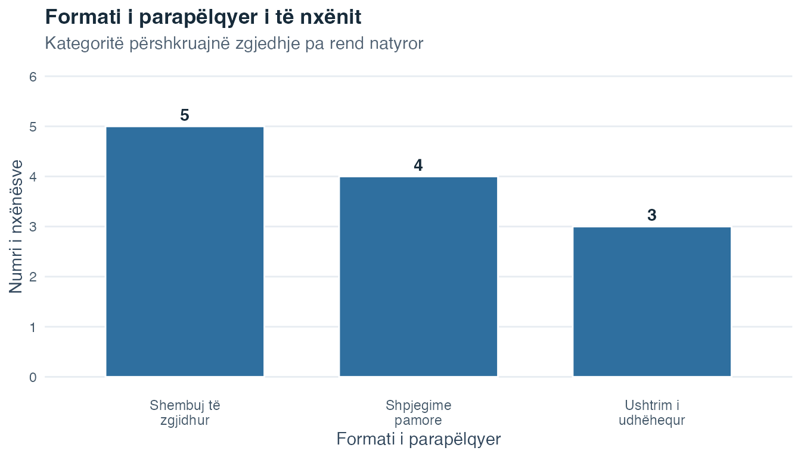
Lexoje diagramin nga niveli fillestar i boshtit vertikal. Shtylla e shembujve të zgjidhur arrin në 5, ajo e shpjegimeve pamore në 4 dhe ajo e ushtrimit të udhëhequr në 3. Pozicionet horizontale i mbajnë kategoritë të ndara pa sugjeruar se një format është në thelb më i lartë se tjetri.
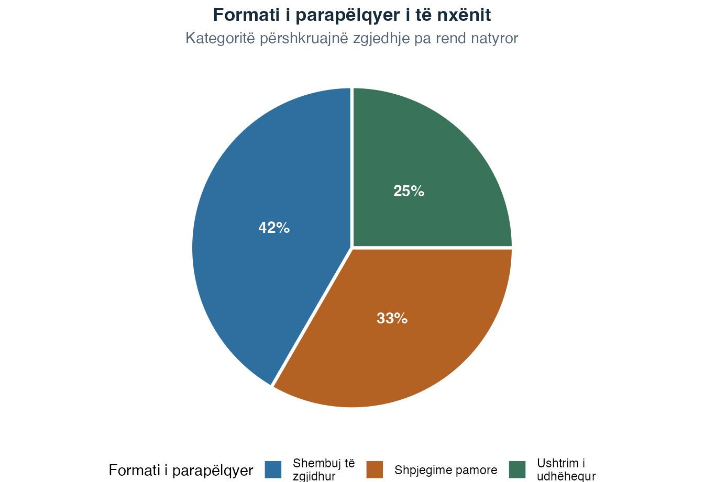
Sektorët japin gjithsej 100%, prandaj diagrami rrethor thekson përbërjen. Krahasoje me shtyllat. Kategoria më e madhe dhe ajo më e vogël dallohen në të dyja paraqitjet, por ndryshimi midis 4 dhe 3 vlerësohet më lehtë nga gjatësia e shtyllave. Të dy grafikët janë të vlefshëm, ndërsa diagrami me shtylla zakonisht është mjeti më i saktë për krahasim.
Një ndryshore rendore ka kategori me rend domethënës, por largësitë ndërmjet kategorive nuk janë domosdoshmërisht të barabarta.
Shembuj:
Një shkallë rendore tregon kush ka më shumë ose më pak nga një veti. Në sistemin zviceran nota 6 është më e mirë se nota 4. Në Gjermani drejtimi përmbyset dhe 1 është nota më e lartë. Vlerësimi “e rëndë” tregon më shumë shqetësim se vlerësimi “e lehtë”. Megjithatë, largësitë ndërmjet kategorive fqinje nuk janë domosdoshmërisht të barabarta. Kalimi me një hap note nuk përfaqëson medoemos të njëjtin dallim në arritje në çdo pikë të shkallës. Hapat janë të renditur, por jo medoemos me madhësi të njëjtë.
Shembulli ynë i përbashkët përdor pyetjen “Sa i sigurt ndihesh para punëtorisë?” Përgjigjet shkojnë nga 1, shumë i pasigurt, deri në 5, shumë i sigurt. Vlerësimi 4 shpreh më shumë siguri se vlerësimi 2. Shkalla nuk na tregon se hapi psikologjik nga 1 në 2 ka pikërisht të njëjtën madhësi si hapi nga 4 në 5.
| Vlerësimi i sigurisë | Nxënësit | Përqindja | Përqindja kumulative |
|---|---|---|---|
| 1 | 1 | 8.3% | 8.3% |
| 2 | 2 | 16.7% | 25.0% |
| 3 | 4 | 33.3% | 58.3% |
| 4 | 3 | 25.0% | 83.3% |
| 5 | 2 | 16.7% | 100.0% |
Lexoje kolonën kumulative nga niveli më i ulët drejt atij më të lartë. Ajo u përgjigjet pyetjeve si “Sa për qind zgjodhën 3 ose më pak?” Këtu përgjigjja është 58.3%. Ky total që rritet hap pas hapi ka kuptim sepse kategoritë kanë një rend të arsyeshëm.
Çdo rikodim rreptësisht rritës është i lejueshëm, sepse e ruan rendin. Kodimi i niveleve të ulëta, të mesme dhe të larta me 1, 2 dhe 3 ose me 10, 20 dhe 100 e ruan renditjen, edhe pse largësitë numerike ndryshojnë. Një rikodim që e përmbys rendin ose u jep dy kategorive të njëjtin pozicion nuk e ruan kuptimin fillestar rendor.
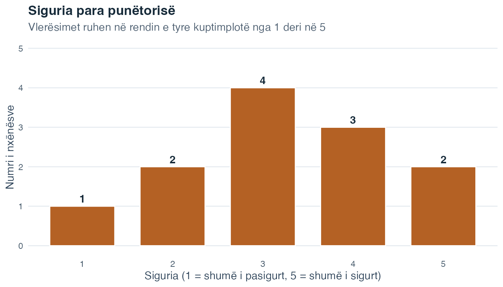
Lëviz nga e majta në të djathtë, ndërsa siguria rritet. Lartësitë e shtyllave japin numërimet e kategorive dhe kulmi te vlerësimi 3 tregon modën. Pozicionet e renditura e bëjnë më të lehtë edhe kuptimin e kategorisë medianë. Një diagram rrethor do t’i ruante përpjesëtimet, por do ta bënte më pak të dukshëm rendin dhe modelin kumulativ.
Një ndryshore intervalore ka largësi të barabarta ndërmjet të gjitha vlerave, prandaj dallimet numerike kanë kuptim. Megjithatë, ajo nuk ka zero të vërtetë. Vlera zero caktohet me marrëveshje dhe nuk përfaqëson mungesën e plotë të vetisë.
Shembulli më i qartë është temperatura e matur në Celsius ose Fahrenheit. Dallimi ndërmjet 10°C dhe 20°C është po aq i madh sa dallimi ndërmjet 20°C dhe 30°C. Largësitë janë të njëtrajtshme. Por 0°C nuk do të thotë se “nuk ka temperaturë”. Ai shënon pikën e ngrirjes së ujit, një pikë reference të caktuar. Pa një zero të vërtetë, raportet nuk kanë kuptim: temperatura 40°C nuk është “dy herë më e ngrohtë” se 20°C.
Shumë masa me disa pohime në shkencat sociale, përfshirë pikëzime psikologjike dhe arsimore, analizohen si afërsisht intervalore. Largësitë e barabarta janë një supozim pune për matjen, i cili kërkon evidencë nga mënyra si është ndërtuar dhe vlerësuar instrumenti. Vetëm numrat e shtypur nuk e vërtetojnë atë. Një pikëzim 0 mund të shënojë thjesht skajin e poshtëm të një instrumenti dhe nuk nënkupton medoemos mungesën e plotë të vetisë themelore.
Një rregull pozitiv zhvendosjeje dhe rishkallëzimi i formës \(y = a + b x\), me \(b > 0\), është i lejueshëm. Numri i pandryshueshëm \(a\) e zhvendos pikën zero, ndërsa shumëzuesi pozitiv \(b\) e ndryshon njësinë. Rregulli i ruan dallimet e barabarta. Shndërrimi nga Celsius në Fahrenheit është shembulli standard.
Temperaturat e dhomës së punëtorisë japin një shembull të vogël intervalor. Çdo dallim prej 1°C ka të njëjtin kuptim. Vlerat mund të zhvendosen dhe rishkallëzohen në Fahrenheit pa ndryshuar asnjë dallim temperature që përfaqësojnë të dhënat.
| Nxënësi | Temperatura e dhomës (°C) |
|---|---|
| 1 | 18 |
| 2 | 19 |
| 3 | 19 |
| 4 | 20 |
| 5 | 20 |
| 6 | 20 |
| 7 | 21 |
| 8 | 21 |
| 9 | 21 |
| 10 | 21 |
| 11 | 22 |
| 12 | 23 |
Pyet fillimisht çfarë na lejon largësia e barabartë. Mund t’i mbledhim temperaturat dhe të llogarisim një mesatare. Mund t’i përshkruajmë devijimet në gradë dhe të krahasojmë madhësinë e tyre. Mund edhe t’i renditim vlerat dhe të përdorim përmbledhje të bazuara në rend. Pika zero e caktuar me marrëveshje ende na pengon të pohojmë me kuptim se 20°C është dy herë më ngrohtë se 10°C.
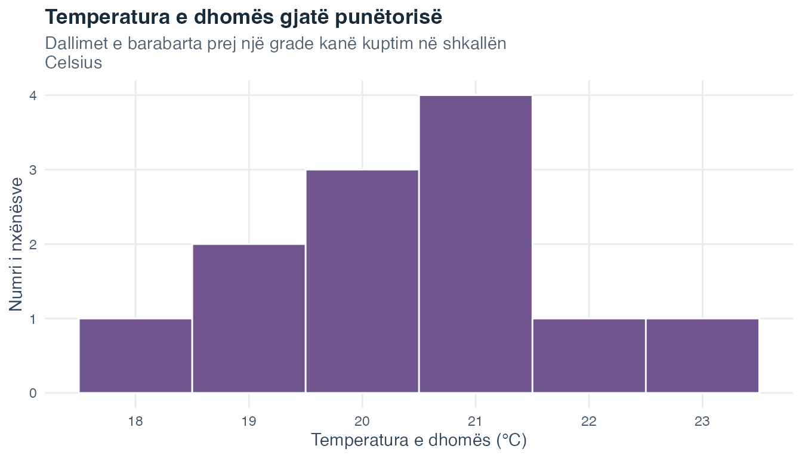
Çdo shtyllë mbulon të njëjtin interval prej një grade, prandaj lartësitë e shtyllave mund të krahasohen. Përqendrimi rreth 20°C dhe 21°C shihet qartë, ndërsa skajet tregojnë se vlerat e vrojtuara shtrihen nga 18°C deri në 23°C.
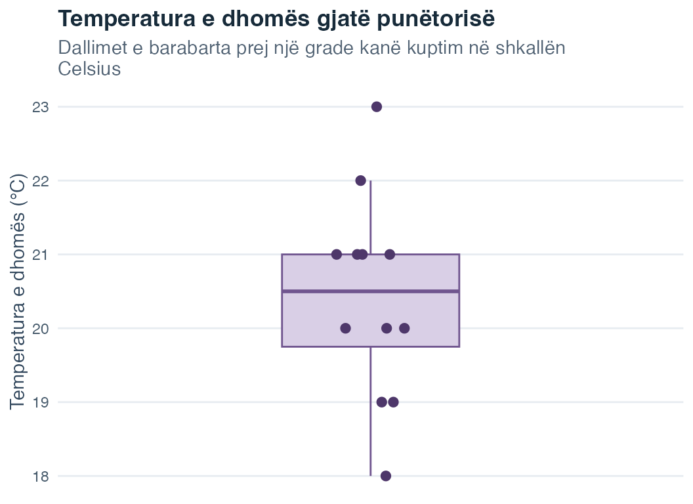
Diagrami kuti-me-mustaqe jep një pamje më të shpejtë të qendrës dhe shpërhapjes, ndërsa pikat e mbivendosura na kujtojnë sa hollësi ngjesh përmbledhja. Shikimi i të dy paraqitjeve jep më shumë informacion sesa të presim që njëra prej tyre t’i përgjigjet çdo pyetjeje.
Një ndryshore e raportit ka largësi të barabarta si një ndryshore intervalore dhe, përveç kësaj, një pikë zero të vërtetë, ku zeroja përfaqëson mungesën e madhësisë së matur. Kjo u jep kuptim pohimeve me raporte.
Shembuj:
Dallimi praktik nga shkallët intervalore është se tani mund të bësh pohime si “koha mesatare e reagimit e Grupit A është 1.5 herë ajo e Grupit B”. Pohime të tilla kanë kuptim real në shkallën e raportit.
Transformimet shumëzuese pozitive të formës \(y = b x\), me \(b > 0\), janë të lejueshme. Ato e ndryshojnë njësinë, por e mbajnë zeron të pandryshuar dhe i ruajnë raportet, si në shndërrimin e centimetrave në metra.
Në shembullin e punëtorisë, koha vullnetare e studimit matet në minuta. Vlera 0 do të thotë se nuk u regjistrua asnjë minutë studimi, ndërsa 60 minuta janë dy herë më shumë kohë se 30 minuta. Shndërrimi i minutave në orë e ndryshon njësinë duke ruajtur zeron dhe çdo raport.
| Nxënësi | Koha e studimit (minuta) |
|---|---|
| 1 | 0 |
| 2 | 15 |
| 3 | 20 |
| 4 | 25 |
| 5 | 30 |
| 6 | 35 |
| 7 | 40 |
| 8 | 45 |
| 9 | 50 |
| 10 | 60 |
| 11 | 75 |
| 12 | 90 |
Lexoji skajet para se të llogaritësh. Minimumi i vrojtuar prej 0 minutash ka kuptim të drejtpërdrejtë, ndërsa maksimumi është 90 minuta. Pastaj krahaso mesin e shpërndarjes me anën e sipërme më të zgjatur. Ky shqyrtim i parë ndihmon të vendosësh nëse mesatarja me SD-në, mediana me IQR-në ose të dy çiftet e përshkruajnë më qartë grupin.
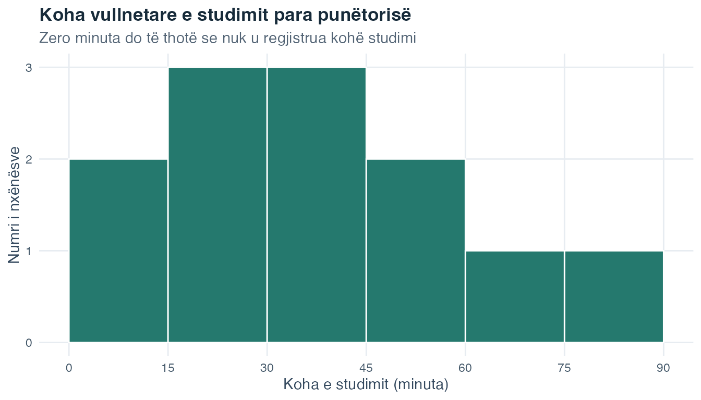
Shtyllat tregojnë si shtrihen kohët e studimit në intervalin nga 0 deri në 90 minuta. Shumica e vrojtimeve ndodhen poshtë vlerave më të gjata, prandaj skaji i sipërm zgjatet më larg se përqendrimi kryesor. Tabela i mban të dukshme vlerat individuale, ndërsa histogrami e bën më të lehtë të shihet ky model i përgjithshëm.
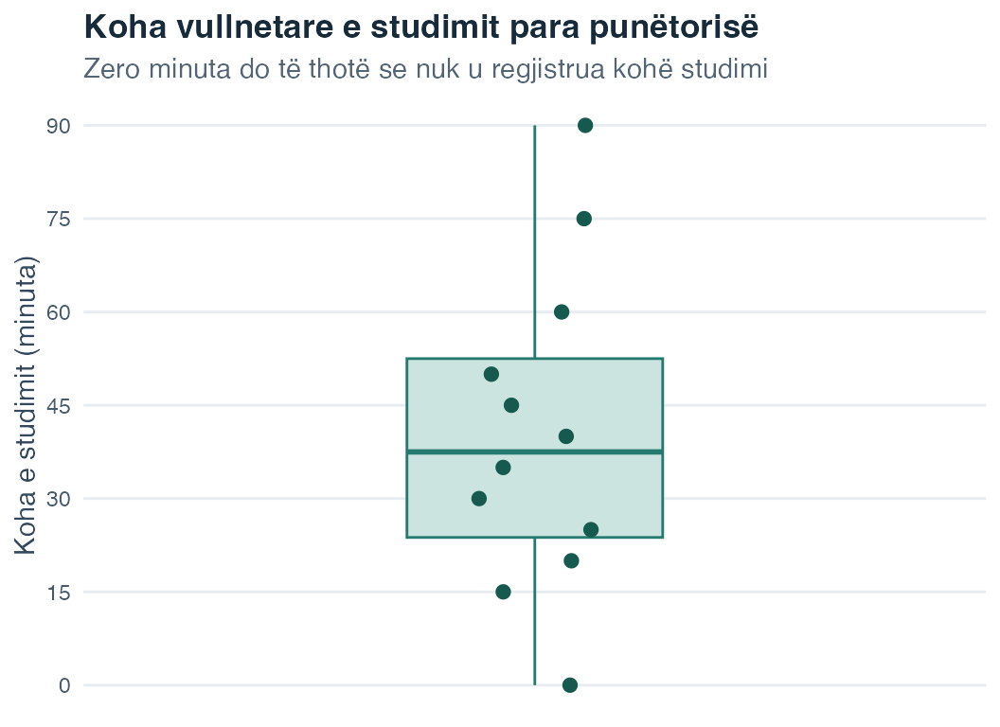
Vija e medianës dhe kutia përmbledhin mesin e renditur të të dhënave. Pikat individuale tregojnë prej cilave vlera doli përmbledhja, duke përfshirë nxënësin me 0 minuta të regjistruara dhe kohët më të gjata të studimit pranë skajit të sipërm.
Një ndryshore absolute është më kufizuesja për transformimet e lejueshme. Sikurse ndryshoret e raportit, ndryshoret absolute kanë zero të vërtetë dhe largësi të barabarta. Veçantia e tyre është njësia natyrore dhe e pandryshueshme, e cila nuk mund të ndryshohet.
Ndryshoret absolute zakonisht janë numërime me numra të plotë të objekteve të pandashme. Vlera të tilla quhen diskrete, sepse ndërmjet mundësive të ndara, si 2 dhe 3, nuk lejohet ndonjë numërim tjetër:
Nuk mund të kesh 1.5 motra ose vëllezër dhe nuk mund ta rishkallëzosh numërimin “5 motra e vëllezër” në një njësi tjetër: njësia përcaktohet nga vetë natyra e asaj që numërohet. Vetëm transformimi identik \(y = x\) është i lejueshëm. Në praktikë, ndryshoret absolute përshkruhen me të njëjtat statistika si ndryshoret e raportit.
Ndryshorja e fundit e punëtorisë numëron sa pyetje ushtrimi përfundoi secili nxënës. Çdo hap prej një njësie përfaqëson një pyetje tjetër të përfunduar. Zero do të thotë asnjë, ndërsa njësia nuk mund të zëvendësohet me minuta, kilogramë ose një njësi tjetër arbitrare.
| Pyetjet e përfunduara | Nxënësit | Përqindja |
|---|---|---|
| 0 | 1 | 8.3% |
| 1 | 2 | 16.7% |
| 2 | 3 | 25.0% |
| 3 | 2 | 16.7% |
| 4 | 2 | 16.7% |
| 5 | 1 | 8.3% |
| 6 | 0 | 0.0% |
| 7 | 1 | 8.3% |
Tabela i mban të dukshëm hapat diskretë. Dy pyetje të përfunduara janë vlera më e shpeshtë. Numërimi 6 nuk paraqitet dhe maksimumi 7 i përket një nxënësi. Këto hollësi do të zhdukeshin po të raportonim vetëm një mesatare.
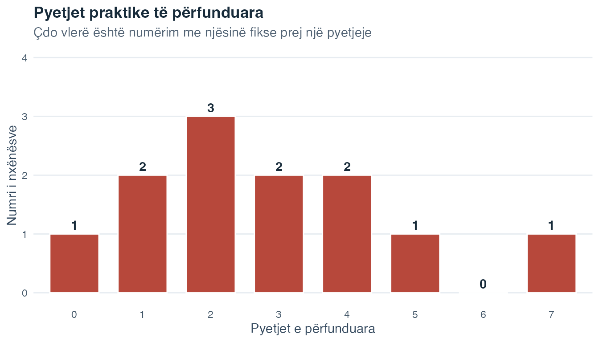
Çdo pozicion horizontal përfaqëson një numër të plotë të mundshëm. Mungesa e shtyllës te 6 ka kuptim, sepse asnjë nxënës nuk përfundoi pikërisht gjashtë pyetje. Shtyllat e ndara e ruajnë natyrën diskrete të ndryshores.
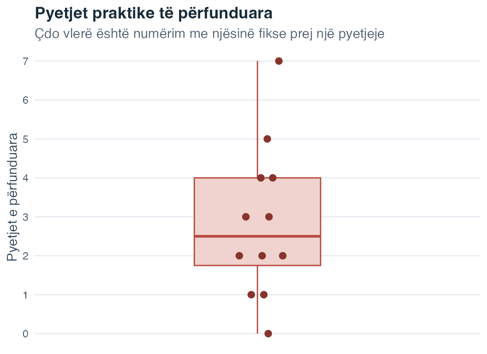
Diagrami kuti-me-mustaqe e bën qendrën dhe shpërhapjen të lehta për t’u krahasuar me një grup tjetër, ndërsa pikat i mbajnë të dukshme numërimet fillestare. Ky kombinim është veçanërisht i dobishëm në një shembull të vogël ku mund të paraqitet ende çdo vrojtim.
| Shkalla | E renditur | Largësi të barabarta | Zero e vërtetë | Njësi e pandryshueshme | Shembull |
|---|---|---|---|---|---|
| Nominale | Jo | Jo | Jo | Jo | Lloji i mbështetjes |
| Rendore | Po | Jo | Jo | Jo | Nota shkollore (1–6) |
| Intervalore | Po | Po | Jo | Jo | Temperatura (°C) |
| E raportit | Po | Po | Po | Jo | Pesha trupore (kg) |
| Absolute | Po | Po | Po | Po | Numri i motrave dhe vëllezërve |
Çdo nivel i shkallës përfshin të gjitha vetitë e niveleve mbi të. Duke zbritur në tabelë, mund të arsyetohen më shumë veprime statistikore. Njohja e nivelit të shkallës së një ndryshoreje përpara llogaritjes së çdo përmbledhjeje është një nga shprehitë më themelore të analizës së mirë të të dhënave.
| Shkalla | Transformimi i lejueshëm | Vetia që duhet ruajtur |
|---|---|---|
| Nominale | Riemërtim një-për-një | Barazia dhe pabarazia e kategorive |
| Rendore | Çdo rikodim rreptësisht rritës | Rendi i rangjeve |
| Intervalore | \(y = a + b x\), ku \(b > 0\) | Barazia e dallimeve |
| E raportit | \(y = b x\), ku \(b > 0\) | Raportet dhe zeroja e vërtetë |
| Absolute | \(y = x\) | Zeroja e pandryshueshme dhe njësia natyrore |
Tabela e parë është një listë kontrolli e vetive të matjes. E dyta i kthen këto veti në një provë praktike: nëse një rikodim i lejueshëm e ndryshon kuptimin e një llogaritjeje të propozuar, ajo llogaritje nuk arsyetohet vetëm nga shkalla. Për shembull, kodet rendore 1, 2 dhe 3 mund të zëvendësohen në mënyrë të lejueshme me 10, 20 dhe 100, sepse rendi mbetet i njëjtë. Mesatarja e tyre numerike ndryshon shumë, çka tregon pse një mesatare rendore kërkon një supozim shtesë për largësi të barabarta.
Tri masat e qendrës që do të paraqiten më pas hyjnë në pika të ndryshme të kësaj hierarkie:
| Masa e qendrës | Niveli më i ulët i matjes që e lejon | Çfarë përdor |
|---|---|---|
| Moda | Nominal | Cila vlerë ose kategori paraqitet më shpesh |
| Mediana | Rendor | Rendin e vrojtimeve |
| Mesatarja | Intervalor | Dallime të barabarta numerike ndërmjet vlerave |
Lexoje këtë tabelë në mënyrë kumulative. Edhe ndryshoret metrike kanë rend, prandaj mund të kenë medianë dhe modë. Një ndryshore rendore mund të ketë modë krahas medianës. Ndërsa zbresim në hierarkinë e matjes, bëhen të arsyeshme përmbledhje shtesë. Ato të mëparshmet nuk zhduken.
Çdo vendim statistikor fillon me nivelin e shkallës. Të dhënat nominale lejojnë numërime, përpjesëtime dhe modën. Të dhënat rendore lejojnë edhe përmbledhje të bazuara në rend, si mediana dhe percentilet. Të dhënat metrike lejojnë mesatare, devijime standarde, korrelacione e të tjera. Një veprim ka kuptim vetëm kur rezultati i tij i mbijeton çdo rikodimi të lejueshëm të shkallës së matjes.
Pasi të njihet niveli i matjes, detyra tjetër është të organizosh vlerat e vëzhguara pa fshehur modelin e tyre. Një shpërndarje frekuencash i organizon vlerat në kategori ose intervale numerike dhe regjistron sa shpesh paraqitet secila. Ajo shpesh është përmbledhja e parë që krijohet për një ndryshore, sepse zbulon kategori që mungojnë, kode të pamundura, grupe të rralla dhe përqendrime që do t’i fshihte një masë e vetme e qendrës.
Për kategorinë ose intervalin \(j\), le të shënojë \(n_j\) frekuencën e tij absolute dhe \(n\) numrin e përgjithshëm të vrojtimeve. Frekuenca relative është:
\[f_j = \frac{n_j}{n}\]
Frekuencat relative mund të raportohen si përpjesëtime ose të shumëzohen me 100 për të marrë përqindje. Për kategoritë me rend domethënës, frekuenca relative kumulative deri te kategoria \(j\) është:
\[F_j = \sum_{k=1}^{j} f_k\]
| Lloji i frekuencës | Kuptimi | Ndryshoret e përshtatshme |
|---|---|---|
| Frekuenca absolute \(n_j\) | Numri i vrojtimeve në kategorinë \(j\) | Çdo nivel matjeje |
| Frekuenca relative \(f_j\) | Përpjesëtimi ose përqindja në kategorinë \(j\) | Çdo nivel matjeje |
| Frekuenca relative kumulative \(F_j\) | Përpjesëtimi në ose nën kategorinë \(j\) | Ndryshore rendore ose metrike |
Frekuencat absolute duhet të kenë shumën \(n\), ndërsa frekuencat relative duhet të kenë shumën 1, përveç dallimeve të vogla nga rrumbullakimi. Frekuencat kumulative nuk kanë kuptim për kategoritë nominale, sepse një total “deri te” një kategori varet nga një rend që shkalla nuk e zotëron.
Vlerësimet fiktive të kënaqësisë japin një shembull të vogël të zgjidhur. Kolona e numërimit tregon sa studentë zgjodhën secilën kategori të renditur. Pjesëtimi i secilit numërim me 160 jep frekuencën relative. Mbledhja e frekuencave relative duke filluar nga vlerësimi 1 jep përpjesëtimin kumulativ.
| Vlerësimi i kënaqësisë | Numri | Frekuenca relative | Përpjesëtimi kumulativ |
|---|---|---|---|
| 1 | 0 | 0.000 | 0.000 |
| 2 | 1 | 0.006 | 0.006 |
| 3 | 27 | 0.169 | 0.175 |
| 4 | 80 | 0.500 | 0.675 |
| 5 | 52 | 0.325 | 1.000 |
Lexoje kolonën e fundit nga lart poshtë. Vlera e saj arrin 0.675 te vlerësimi 4, prandaj 67.5% e studentëve në këtë grup fiktiv të dhënash zgjodhën vlerësimin 4 ose më të ulët. Rreshti i fundit arrin 1.000, sepse tani janë përfshirë të gjitha vrojtimet. Vlera llogaritet nga të njëjtat numërime që paraqiten në tabelë, prandaj interpretimi me fjalë mbetet në përputhje nëse të dhënat mësimore rigjenerohen qëllimisht ndonjëherë.
Një tabelë frekuencash ruan më shumë hollësi se një mesatare e vetme. Kontrollo totalet, kategoritë me frekuencë zero, renditjen dhe emëruesit përpara se të kalosh te një grafik ose përmbledhje numerike.
Shpërndarja e frekuencave e tregon modelin e plotë kategori pas kategorie. Tani mund t’i ngjeshim dy tipare të rëndësishme të atij modeli: ku ndodhet qendra dhe sa gjerësisht ndryshojnë vlerat.
Pasi ta njohësh nivelin e shkallës, lind natyrshëm pyetja: ku ndodhen në përgjithësi këto vrojtime? Një listë me dymbëdhjetë ose dymbëdhjetë mijë vlera është e vështirë të mbahet në mendje. Një masë e prirjes qendrore e ngjesh atë listë në një pikë reference, e cila na ndihmon të përshkruajmë një grup, të krahasojmë grupe dhe të dallojmë vrojtime që ndodhen larg përqendrimit kryesor.
Fjala tipike duhet përdorur me kujdes. Ajo nuk do të thotë se çdo person ka vlerën e raportuar. Qendra numerike mund të mos jetë madje as një vlerë e vrojtuar. Ajo do të thotë se kemi zgjedhur një mënyrë të mbrojtshme për të përfaqësuar vendndodhjen e shpërndarjes. Mesatarja, mediana dhe moda e përkufizojnë këtë vendndodhje në mënyra të ndryshme. Zgjedhja më e mirë varet nga niveli i matjes, forma e shpërndarjes dhe pyetja përmbajtësore.
Mendo sikur pyet se ku qëndron zakonisht një klasë për nga koha e studimit. Mesatarja baraspeshon të gjitha minutat e regjistruara, mediana gjen nxënësin në mes të klasës së renditur, ndërsa moda identifikon kohëzgjatjen e saktë më të shpeshtë. Këto përgjigje mund të ndryshojnë pa qenë e gabuar asnjë llogaritje. Ato u përgjigjen versioneve të ndryshme të pyetjes “Çfarë është tipike?”
Mesatarja është mesatarja aritmetike. Mblidhi të gjitha vlerat në grupin e të dhënave dhe pjesëtoje shumën me numrin e vrojtimeve:
\[\bar{x} = \frac{1}{n} \sum_{i=1}^{n} x_i\]
Këtu, \(n\) është madhësia e kampionit, \(x_i\) është vlera e vrojtimit të \(i\)-të dhe mbledhja zhvillohet nga \(i = 1\) deri në \(i = n\).
Devijimet nga mesatarja kanë gjithmonë shumën zero:
\[\sum_{i=1}^{n}(x_i - \bar{x}) = 0\]
Devijimet pozitive mbi mesataren i baraspeshojnë saktësisht devijimet negative nën të. Ky identitet shpjegon pse devijimet e papërpunuara nuk mund të mesatarizohen për të matur ndryshueshmërinë dhe pse më vonë përdoren devijimet në katror.
Kjo veti baraspeshuese i jep mesatares qëllimin e saj kryesor. Ajo ofron një pikë të vetme reference që përdor çdo vlerë dhe mbështet llogaritjet e mëvonshme me devijime, duke përfshirë variancën, regresionin dhe shumë metoda inferenciale. Kur një shpërndarje metrike ka një përqendrim afërsisht simetrik, mesatarja shpesh e përshkruan me efektshmëri vendndodhjen e saj.
Një shembull konkret: pesë studentë raportojnë pesha trupore prej 65, 70, 58, 72 dhe 80 kilogramësh. Mesatarja është:
\[\bar{x} = \frac{65 + 70 + 58 + 72 + 80}{5} = \frac{345}{5} = 69 \text{ kg}\]
Mesatarja përdor çdo vlerë në grupin e të dhënave, prandaj është shumë informuese kur shpërndarja është mjaft simetrike. E njëjta ndjeshmëri ndaj të gjitha vlerave është edhe dobësia e saj. Një vrojtim i vetëm i skajshëm mund ta zhvendosë ndjeshëm mesataren. Nëse studenti më i rëndë peshon 140 kg në vend të 80 kg, mesatarja bëhet:
\[\bar{x} = \frac{65 + 70 + 58 + 72 + 140}{5} = \frac{405}{5} = 81 \text{ kg}\]
Kjo mesatare e re prej 81 kg mund të mos e përfaqësojë më studentin tipik, sepse një vrojtim jo i zakonshëm e tërheq lart.
Përdore mesataren kur dallimet numerike kanë kuptim dhe qendra aritmetike i përgjigjet pyetjes kërkimore. Gjithmonë shqyrtoje më parë shpërndarjen. Një vlerë e skajshme mund të jetë gabim në të dhëna, rast i rrallë por i vlefshëm ose pjesë e rëndësishme e popullatës. Hetoji këto mundësi para se të vendosësh si ta trajtosh.
Mediana është një vlerë që i ndan vrojtimet e renditura në mënyrë që të paktën gjysma të jenë në ose nën të dhe të paktën gjysma të jenë në ose mbi të. Ky formulim mbetet i saktë edhe kur ka vlera të barabarta.
Qëllimi i medianës është ta gjejë qendrën përmes pozicionit. Meqë varet kryesisht nga rendi, ajo mbetet informative për të dhëna rendore dhe për shpërndarje metrike ku bishtat ose vlerat e pazakonta do ta tërhiqnin mesataren larg grupit kryesor. Pyetjet për të ardhurat, kohët e pritjes ose kohët e reagimit tipik shpesh përfitojnë nga kjo pamje e bazuar në renditje.
Kur numri i vrojtimeve është tek, mediana është vlera e vetme në mes të listës së renditur. Kur numri i vrojtimeve metrike është çift, programet statistikore zakonisht raportojnë mesataren aritmetike të dy vlerave qendrore. Për një ndryshore vetëm rendore, kjo mesatare mund të krijojë një numër ose kategori që shkalla nuk e përkufizon. Në atë rast, raporto kategoritë qendrore të renditura ose përdor një konventë të dokumentuar pa e trajtuar largësinë ndërmjet tyre si metrike.
Për pesë peshat trupore të renditura (58, 65, 70, 72, 80), mediana është vlera e tretë: 70 kg.
Tani krahaso çfarë ndodh me vlerën e veçuar: (58, 65, 70, 72, 140). Mediana mbetet vlera e tretë: 70 kg. Në këtë shembull, vrojtimi i skajshëm nuk e ndryshon medianën. Kjo ilustron vetinë kryesore të saj: mediana është rezistente ndaj vlerave të veçuara, që do të thotë se një numër i vogël vlerash të skajshme zakonisht ka ndikim të kufizuar mbi të.
Kjo rezistencë ka rëndësi në kërkimin mbi sjelljen dhe në kërkimin shoqëror. Kohët e reagimit në një detyrë me vëmendje të ndarë shpesh anojnë djathtas. Shumica e pjesëmarrësve mund të përgjigjen brenda 350 deri në 600 milisekonda, ndërsa disave u duhen 1,500 milisekonda ose më shumë. Në atë situatë, mediana shpesh e përshkruan performancën tipike të grupit kryesor më qartë se mesatarja, e cila lëviz drejt përgjigjeve më të ngadalta.
Moda është vlera ose kategoria që paraqitet më shpesh. Ndryshe nga mesatarja dhe mediana, moda mund të llogaritet për çdo nivel të shkallës, duke përfshirë ndryshoret nominale. Nëse dëshiron të dish se cila qasje terapeutike përdoret më shpesh në një klinikë, moda është përgjigjja e përshtatshme.
Qëllimi i modës është praktik dhe i drejtpërdrejtë. Ajo tregon cila përgjigje, kategori ose vlerë e saktë paraqitet më shpesh. Kjo e bën masën e vetme të prirjes qendrore që funksionon me një ndryshore thjesht nominale. Moda është gjithashtu e dobishme kur zgjedhja më e shpeshtë ka rëndësi në vetvete, si gjuha më e kërkuar për një shërbim ose numri më i shpeshtë i seancave të ndjekura.
Po sikur dy vlera të paraqiten po aq shpesh dhe të dyja ta kalojnë frekuencën e çdo vlere tjetër? Mendo vlerat 1, 2, 2, 3, 3 dhe 4. Vlerat 2 dhe 3 paraqiten nga dy herë, prandaj të dyja janë moda dhe të dhënat janë bimodale. Nëse më shumë se dy vlera ndajnë frekuencën më të lartë, të dhënat kanë disa moda dhe mund të quhen multimodale. Kur çdo vlerë paraqitet po aq shpesh, nuk ka një modë unike për t’u raportuar.
Për të dhëna numerike të pagrupuara, moda u referohet vlerave të sakta që përsëriten. Një kulm në histogram lidhet me modën, por varet nga klasat e zgjedhura. Prandaj nuk duhet trajtuar automatikisht si modë e saktë e kampionit. Pyet veten nëse po identifikon vlerën e vrojtuar më të shpeshtë apo një përqendrim më të gjerë të krijuar nga grupimi i vlerave të afërta.
Për të dhëna sasiore, moda është veçanërisht e dobishme kur:
Një dallim i dukshëm ndërmjet mesatares dhe medianës mund të jetë shenjë e asimetrisë, por vetëm renditja e tyre nuk provon një formë të caktuar. Kur histogrami tregon edhe një bisht të gjatë djathtas, një mesatare mbi medianën përputhet me idenë se vlerat e larta e tërheqin mesataren lart, ndërsa mediana mbetet më e qëndrueshme. Në atë rast, mediana mund ta përshkruajë më mirë vlerën tipike.
Mesatarja, mediana dhe moda e përkufizojnë secila ndryshe fjalën “tipike”. Mesatarja është shpesh informative për të dhëna metrike afërsisht simetrike. Mediana dhe IQR janë shpesh më informative kur asimetria ose vlerat e pazakonta do ta largonin mesataren dhe devijimin standard nga përqendrimi kryesor. Moda është e përshtatshme për të dhëna nominale ose kur ka rëndësi të gjendet vlera më e shpeshtë. Mund të jetë e dobishme më shumë se një masë, prandaj puna transparente kërkimore tregon çfarë u përdor dhe pse.
Pasi kemi gjetur qendrën, duhet të pyesim sa afër grumbullohen vrojtimet rreth saj. Ndryshueshmëria përshkruan sa fort ndryshojnë vlerat brenda një grupi të dhënash. Ajo na tregon nëse një vlerë qendrore përfaqëson një grup mjaft të ngjashëm apo ngjesh një gamë të gjerë përvojash në një numër tepër të thjeshtë.
Mendo dy klasa me të njëjtin pikëzim mesatar testi prej 70. Në klasën e parë, pothuajse të gjithë marrin nga 68 deri në 72 pikë. Në klasën e dytë, pikëzimet shkojnë nga 35 deri në 100. Mesatarja e përbashkët fsheh një dallim të madh. Klasa e parë është e përqendruar ngushtë, ndërsa e dyta ka ndryshueshmëri shumë më të madhe. Ky dallim mund të ndryshojë mënyrën si i kuptojmë nevojat arsimore, pabarazinë, cilësinë e matjes ose praninë e nëngrupeve të dallueshme.
Prandaj, ndryshueshmëria ka disa qëllime. Ajo tregon sa përfaqësuese është qendra, i bën të dukshme dallimet midis njerëzve ose rasteve, ndihmon të dallohen vrojtimet e pazakonta ose të pamundura dhe na përgatit për pyetjet e mëvonshme rreth pasigurisë. Asnjë masë e vetme nuk e kap çdo aspekt të shpërhapjes. Amplituda përdor dy skajet, IQR-ja përqendrohet në gjysmën e mesme, ndërsa varianca dhe devijimi standard përshkruajnë devijimet rreth mesatares.
Amplituda është masa më e drejtpërdrejtë e shpërhapjes:
\[\text{Amplituda} = x_{\max} - x_{\min}\]
Ajo tregon sa larg janë nga njëra-tjetra vlerat më të skajshme të vrojtuara. Qëllimi i saj kryesor është një kontroll i shpejtë i shtrirjes së plotë. Nëse moshat e regjistruara shkojnë nga 18 deri në 240 vjeç, skajet zbulojnë menjëherë një vlerë që duhet hetuar. Amplituda është gjithashtu e lehtë për t’u komunikuar kur ka rëndësi shtrirja e plotë.
Kjo masë varet tërësisht nga minimumi dhe maksimumi. Një vrojtim i vetëm jashtëzakonisht i lartë ose i ulët mund ta zgjerojë shumë amplitudën edhe kur çdo vlerë tjetër mbetet e pandryshuar. Përdore amplitudën si pjesë të një përshkrimi më të plotë dhe mos prit që ajo ta mbajë e vetme gjithë interpretimin e ndryshueshmërisë.
Për të marrë një pamje më të pasur të mënyrës si shpërndahen vlerat në gjithë amplitudën, përdorim kuantilet. Një kuantil \(p\) është një prag që vendos një përpjesëtim të caktuar të vrojtimeve të renditura në ose nën të. Percentilet e shprehin \(p\)-në në një shkallë nga 0 deri në 100.
Kuantilet shërbejnë për një qëllim tjetër nga mesatarja. Ato gjejnë pozicione relative. Një vlerë në percentilin e 90-të na tregon se ajo ndodhet në ose mbi shumicën e vrojtimeve në grupin e zgjedhur të referencës, edhe kur shpërndarja është e anuar. Kuantilet përcaktojnë gjithashtu pragje të dobishme për të përshkruar pjesët e poshtme, të mesme dhe të sipërme të një grupi të dhënash pa kërkuar largësi të barabarta mes kategorive.
Tri percentile janë veçanërisht të rëndësishme në statistikën përshkruese:
Së bashku, tri kuartilet përshkruajnë katër të katërtat e njëpasnjëshme të të dhënave të renditura. Në një kampion të fundmë, vlerat e barabarta dhe interpolimi bëjnë që këto të katërta të mos jenë gjithmonë katër grupe me numër saktësisht të barabartë vrojtimesh. Programet statistikore përdorin disa konventa të arsyeshme për kuantilet e kampionit, prandaj kuartilet e raportuara mund të ndryshojnë pak. Tregoje konventën kur vlerat e sakta të kuartileve ndikojnë ndjeshëm në një përfundim.
Diapazoni ndërkuartilor (IQR) mat shpërhapjen ndërmjet kuartilit të parë dhe të tretë:
\[\text{IQR} = Q_3 - Q_1\]
IQR-ja i përgjigjet një pyetjeje veçanërisht të dobishme: sa i gjerë është intervali ku shtrihet gjysma e mesme e grupit të të dhënave? Shpesh pikërisht këtë pjesë duam të shohim kur përshkruajmë ndryshueshmërinë e zakonshme. IQR-ja çiftohet natyrshëm me medianën, sepse të dyja përdorin pozicionin e renditur dhe ndikohen relativisht pak nga një numër i vogël vrojtimesh të skajshme.
Meqë IQR-ja varet nga dy kuantile qendrore dhe jo nga vlerat më të skajshme, ajo është rezistente: një numër i vogël vrojtimesh të skajshme zakonisht ka ndikim të kufizuar mbi të. Kuartilet e kampionit mund të ndryshojnë kur ndryshojnë vrojtimet, prandaj rezistenca nuk do të thotë pandjeshmëri e plotë. Për kategoritë rendore, kategoritë e kuartileve kanë kuptim. Interpretimi i dallimit të tyre numerik si IQR kërkon gjithashtu largësi domethënëse.
IQR-ja përcakton edhe shtrirjen e mustaqeve të diagramit. Duke pasur IQR-në, vlerat e kufirit të poshtëm dhe të sipërm janë:
\[\text{Kufiri i poshtëm} = Q_1 - 1.5 \cdot \text{IQR}\] \[\text{Kufiri i sipërm} = Q_3 + 1.5 \cdot \text{IQR}\]
Mustaqja e poshtme shtrihet deri te vlera më e vogël e vëzhguar në ose mbi kufirin e poshtëm. Mustaqja e sipërme shtrihet deri te vlera më e madhe e vëzhguar në ose nën kufirin e sipërm. Çdo vrojtim përtej këtyre kufijve vizatohet veçmas si pikë dhe trajtohet si vlerë e mundshme e veçuar. Vlerat e mundshme të veçuara nuk janë automatikisht gabime. Ato janë vrojtime të pazakonshme krahasuar me pjesën tjetër të grupit dhe meritojnë shqyrtim më të afërt.
Varianca e korrigjuar e kampionit mbledh devijimet në katror nga mesatarja e kampionit dhe e pjesëton shumën e tyre me \(n - 1\):
\[s^2 = \frac{1}{n - 1} \sum_{i=1}^{n} (x_i - \bar{x})^2\]
Pse i ngremë devijimet në katror? Po të mblidhje \((x_i - \bar{x})\) pa ngritje në katror, devijimet pozitive dhe negative do ta anulonin njëra-tjetrën dhe shuma do të ishte zero, pavarësisht sa të shpërndara janë të dhënat. Ngritja në katror e shmang këtë anulim dhe u jep devijimeve më të mëdha ndikim më të madh në shumë.
Varianca ka një qëllim qendror matematikor. Ajo i kthen të gjitha devijimet në madhësi jo negative dhe i bashkon në një masë të vetme të shpërhapjes rreth mesatares. Devijimet në katror sillen mirë edhe në modelet probabilistike, gabimet standarde, regresionin, ANOVA-n dhe shumë metoda të tjera që do të përdoren më vonë. Njësia e saj në katror e bën interpretimin e drejtpërdrejtë më pak intuitiv, prandaj zakonisht e kthejmë në njësinë fillestare përmes devijimit standard.
Pse përdorim \(n - 1\)? Pasi llogaritet mesatarja e kampionit, devijimet duhet të kenë shumën zero. Nëse njihen \(n - 1\) devijimet e para, devijimi i fundit është i përcaktuar dhe nuk është më i lirë të ndryshojë. Formula e korrigjuar e variancës së kampionit e merr parasysh këtë liri të humbur duke përdorur \(n - 1\). Tema 3 zhvillon arsyen që lidhet me kampionimin e përsëritur. Këtu, pika e rëndësishme është ta përdorësh këtë formulë në mënyrë të njëtrajtshme.
Nëse vlerat e vrojtuara përbëjnë të gjithë popullatën me interes dhe jo një kampion për vlerësim, varianca e popullatës shkruhet:
\[\sigma^2 = \frac{1}{N}\sum_{i=1}^{N}(x_i - \mu)^2\]
Këtu, \(N\) dhe \(\mu\) janë madhësia dhe mesatarja e popullatës. Dy formulat u përgjigjen pyetjeve të ndryshme, prandaj emëruesi dhe shënimi duhet të tregojnë nëse të dhënat trajtohen si kampion apo si popullatë e plotë.
Varianca shprehet në njësitë në katror të ndryshores origjinale, për shembull kg² kur ndryshorja është pesha trupore në kilogramë. Prandaj nuk interpretohet drejtpërdrejt në shkallën origjinale. Devijimi standard e zgjidh këtë problem.
Shembull i plotë llogaritjeje me kampion. Supozo se katër studentë marrin pikëzime përqendrimi prej 3, 6, 7 dhe 12 pikësh. Mesatarja e kampionit është \(\bar{x}=(3+6+7+12)/4=7\) pikë. Llogaritja e mban të dukshëm secilin devijim:
| Vrojtimi \(x_i\) | Devijimi \(x_i-\bar{x}\) | Devijimi në katror \((x_i-\bar{x})^2\) |
|---|---|---|
| 3 | \(3-7=-4\) | 16 |
| 6 | \(6-7=-1\) | 1 |
| 7 | \(7-7=0\) | 0 |
| 12 | \(12-7=5\) | 25 |
| Gjithsej | 0 | 42 |
Shuma e devijimeve është zero, siç duhet të jetë. Shuma e devijimeve të tyre në katror është 42. Meqë këto katër vrojtime trajtohen si kampion, pjesëto me \(n-1=3\):
\[s^2=\frac{42}{4-1}=14\,\text{pikë}^2,\]
pastaj kthehu te njësia origjinale duke nxjerrë rrënjën katrore:
\[s=\sqrt{14}=3.74\text{ pikë}.\]
Varianca është 14 pikë në katror, ndërsa devijimi standard e vendos shkallën e devijimeve në rreth 3.74 pikë. Nëse këto katër vlera do të ishin e gjithë popullata me interes, emëruesi do të ishte \(N=4\) dhe rezultati do t’i përgjigjej një pyetjeje tjetër.
Devijimi standard është rrënja katrore e variancës dhe e kthen masën e shpërhapjes në njësinë origjinale të matjes:
\[s = \sqrt{s^2} = \sqrt{\frac{1}{n-1} \sum_{i=1}^{n} (x_i - \bar{x})^2}\]
Devijimi standard shpreh shkallën e devijimeve rreth mesatares në njësinë fillestare të ndryshores. Ky është përparësia e tij kryesore praktike. Kur një pikëzim matet në pikë, edhe SD-ja matet në pikë, prandaj madhësia e ndryshueshmërisë lidhet më lehtë me instrumentin. SD-ja rrjedh nga devijimet në katror dhe nuk duhet interpretuar si mesatare aritmetike e largësive absolute.
Një SD më i vogël tregon përqendrim më të ngushtë rreth mesatares se një SD më i madh i matur në të njëjtën shkallë. Krahasimi është më informues kur grupet përdorin të njëjtin instrument në kontekste të ngjashme. Përpjesëtimi i saktë i vrojtimeve brenda një largësie të zgjedhur nga mesatarja vazhdon të varet nga forma e shpërndarjes.
Supozo se e njëjta shkallë e mirëqenies nga 0 në 60 përdoret në dy grupe të krahasueshme me mesatare 45. Një SD prej 3 tregon përqendrim shumë më të ngushtë rreth 45 se një SD prej 15. Krahasimi ka kuptim sepse të dyja vlerat vijnë nga i njëjti instrument dhe e njëjta njësi. Një SD nuk ka kuptim universal jashtë shkallës dhe kontekstit të vet.
Raportoje gjithmonë devijimin standard krahas mesatares. Një mesatare prej 20 pa asnjë informacion për ndryshueshmërinë tregon shumë pak për shpërndarjen ose shkallën e dallimeve individuale në grup.
Mesatarja dhe SD-ja formojnë një çift. Raportoji dhe interpretoji së bashku. Një mesatare prej 20 me SD = 2 përshkruan një grup të përqendruar ngushtë. Një mesatare prej 20 me SD = 10 përshkruan një grup të shpërndarë gjerësisht. Pa SD-në, mesatarja është një përmbledhje e paplotë dhe mund të jetë mashtruese.
Ndryshueshmëria është informacion që meriton vëmendje. Devijimi standard shpreh ndryshueshmërinë rreth mesatares në njësinë e ndryshores. IQR-ja përshkruan gjysmën qendrore të të dhënave të renditura. Amplituda tregon shtrirjen e plotë nga vlera më e vogël te më e madhja. Bashkoje gjithmonë një masë të qendrës me një masë të shpërhapjes dhe interpretoje madhësinë në kontekstin e shkallës së matjes.
Qendra dhe shpërhapja janë përmbledhje numerike të ngjeshura. Tani një grafik na lejon të kontrollojmë çfarë mund të fshehin ato, si asimetrinë, disa kulme, boshllëqe dhe vrojtime të pazakonta.
Niveli i shkallës së një ndryshoreje përcakton drejtpërdrejt cilat paraqitje pamore janë informuese. Përdorimi i diagramit të gabuar është më shumë se një gabim estetik, sepse mund të mashtrojë. Pjesët në vijim tregojnë secilin lloj diagrami me të dhënat nga studimi ynë për ankthin nga provimi te studentët e vitit të parë. Kështu mund të shohësh si duket grafiku dhe çfarë zbulon ai për të dhënat.
Diagrami me shtylla është mjeti standard për paraqitjen e ndryshoreve nominale, të cilat i grupojnë vrojtimet në kategori me emër dhe pa rend të brendshëm. Lartësia e secilës shtyllë tregon sa vrojtime i përkasin asaj kategorie.
Në grupin tonë të të dhënave, gjinia është ndryshore nominale. Pjesëmarrësit u identifikuan si Grua, Burrë ose Divers. Këto kategori nuk kanë një rend numerik natyror. Asnjëra kategori nuk është “më shumë” ose “më pak” se tjetra.
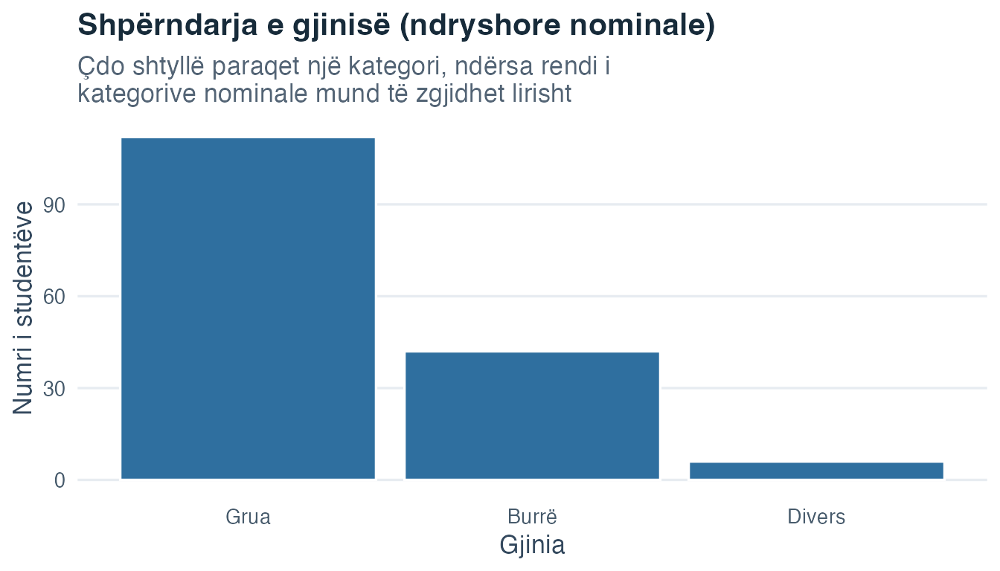
Diagrami rrethor është një alternativë ndaj diagramit me shtylla për ndryshoret nominale. Ai është veçanërisht i dobishëm kur dëshiron të theksosh pjesën përpjesëtimore të secilës kategori ndaj tërësisë. Në vend që frekuencën ta paraqesë lartësia e shtyllës, përpjesëtimin e paraqet këndi i secilit sektor. Rrethi i plotë përfaqëson gjithmonë 100% të kampionit.
Në grupin tonë të të dhënave, grupi i stresit është ndryshore nominale me dy kategori: Stres i ulët dhe Stres i lartë. Para provimit, pjesëmarrësit vetëraportuan se cilit grup i përkisnin.
Fillimisht, të njëjtat dy numërime paraqiten si shtylla. Etiketat mbi shtylla i bëjnë të dukshme frekuencat e sakta.
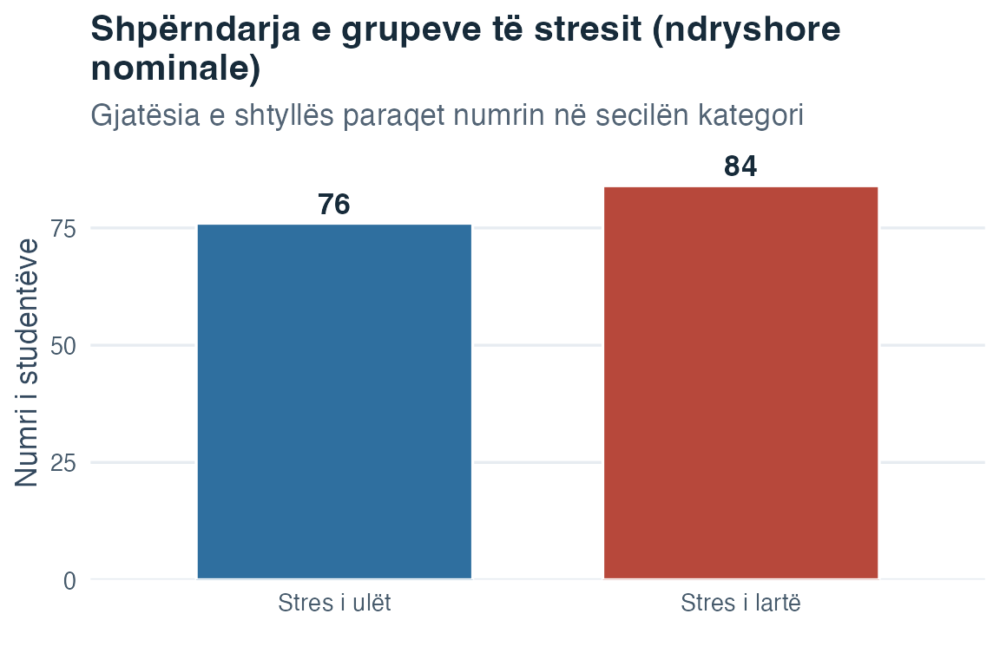
Diagrami rrethor më poshtë i paraqet këto numërime të njëjta si pjesë të një tërësie. Krahasimi i dy figurave tregon kompromisin: gjatësitë e shtyllave krahasohen më saktë, ndërsa sektorët theksojnë si kontribuon secila kategori në 100%.
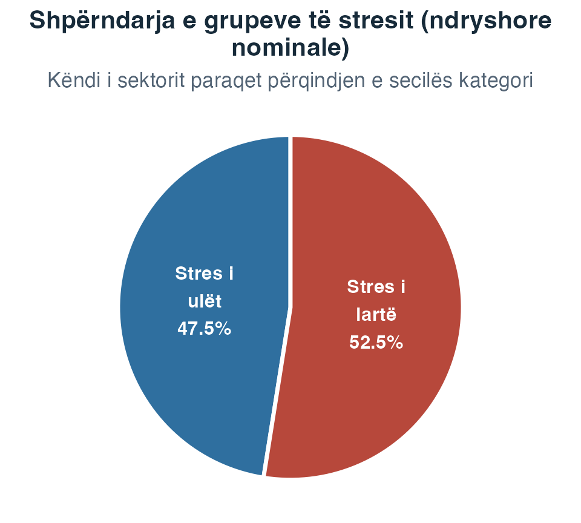
Diagrami i renditur me shtylla përdoret për ndryshoret rendore, ku kategoritë kanë një vijimësi domethënëse, por largësitë ndërmjet kategorive fqinje mund të mos jenë të barabarta. Dallimi vendimtar nga diagrami nominal me shtylla është se shtyllat duhet të paraqiten në rendin e tyre natyror. Rirenditja do ta zhdukte informacionin që i dallon të dhënat rendore nga ato nominale.
Në grupin tonë të të dhënave, kënaqësia me studimet matet në një shkallë nga 1 deri në 5. Vlera 1 tregon kënaqësi shumë të ulët dhe 5 tregon kënaqësi shumë të lartë. Çdo numër më i lartë përfaqëson më shumë kënaqësi, por nuk mund të supozojmë se rritja nga vlerësimi 1 në 2 ka saktësisht të njëjtën madhësi si rritja nga 4 në 5.
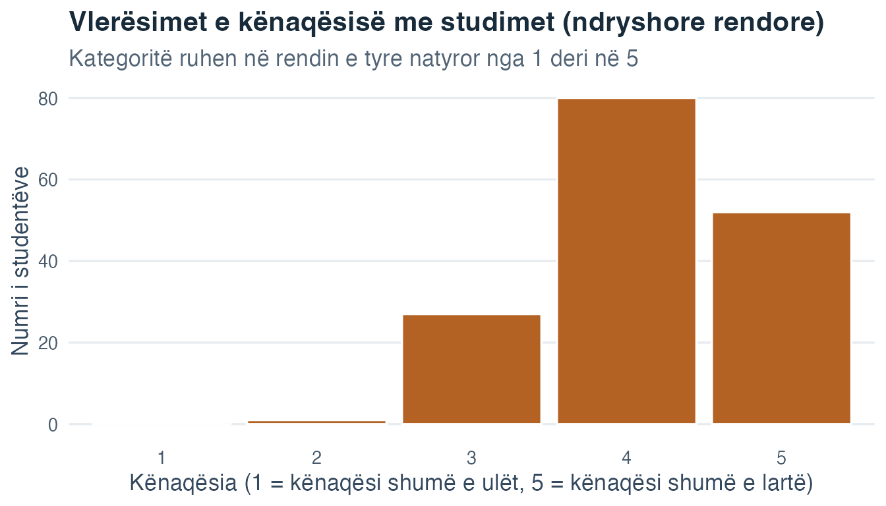
Histogrami është mjeti kryesor për paraqitjen e ndryshoreve metrike, pra të shkallës intervalore, të raportit ose absolute. Ai e ndan amplitudën e plotë të vlerave në intervale me gjerësi të barabartë, të quajtura klasa, dhe vizaton një shtyllë, lartësia e së cilës tregon sa vrojtime bien brenda secilës klasë.
Histogramet udhëhiqen nga një veti vendimtare: sipërfaqja duhet të jetë në përpjesëtim me frekuencën. Kur të gjitha klasat kanë të njëjtën gjerësi, si këtu, lartësia dhe sipërfaqja janë të barasvlershme, prandaj lartësia e shtyllës e paraqet drejt frekuencën. Nëse klasat do të kishin gjerësi të ndryshme, vetëm lartësia do të ishte mashtruese: një klasë më e gjerë me të njëjtën lartësi si një klasë më e ngushtë do të dukej sikur përmban më shumë vrojtime, edhe nëse numërimet reale do të ishin të barabarta.
Për një histogram dendësie, lartësia e klasës \(j\) është frekuenca e saj relative e pjesëtuar me gjerësinë:
\[\text{lartësia}_j = \frac{f_j}{w_j}\]
Atëherë sipërfaqja është \(w_j \times \text{lartësia}_j = f_j\). Edhe zgjedhja e klasave ndikon në pamje. Shumë pak klasa të gjera mund të fshehin strukturë të rëndësishme. Shumë klasa të ngushta mund ta bëjnë ndryshueshmërinë e rastësishme të duket si model. Krahaso disa gjerësi të arsyeshme dhe parapëlqe një paraqitje që zbulon tipare të qëndrueshme pa e zgjedhur vetëm për efekt dramatik.
Në grupin tonë të të dhënave, ankthi nga provimi është një pikëzim nga disa pohime, me vlera nga 0 deri në 40. Një pikëzim i përgjithshëm 0 do të thotë se nuk u pohua asnjë nga pohimet e ankthit, por nuk vërteton mungesën e plotë të konstruktit psikologjik themelor. Prandaj, për analizën përshkruese e trajtojmë pikëzimin si përafërsisht intervalor dhe jo si shkallë raporti.
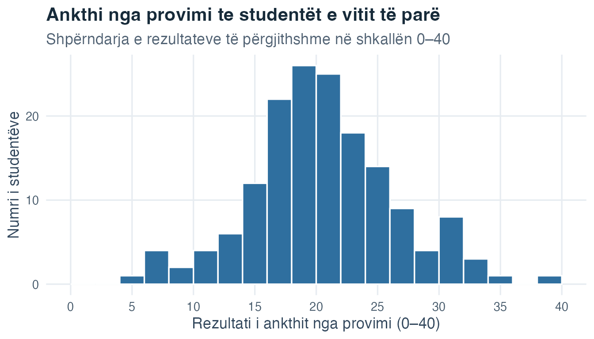
Diagrami kuti-me-mustaqe i Tukey-t jep një përmbledhje të ngjeshur të një shpërndarjeje metrike. Kutia shtrihet nga kuartili i parë (Q1) deri te kuartili i tretë (Q3) dhe vija brenda saj shënon medianën. Mustaqet arrijnë deri te vlerat më të skajshme të vëzhguara brenda 1.5 IQR nga skajet e kutisë. Vrojtimet përtej këtyre kufijve paraqiten veçmas si vlera të mundshme të veçuara.
Para se të krahasosh grupe, është e dobishme ta shohësh veçmas secilën pjesë të një diagrami kuti-me-mustaqe. Figura vijuese përdor vlera përmbledhëse të konstruktuara për ta bërë të dukshme anatominë e diagramit. Ajo paraqet në mënyrë skematike pjesët e diagramit dhe nuk është përmbledhje e llogaritur nga një grup themelor të dhënash të papërpunuara.
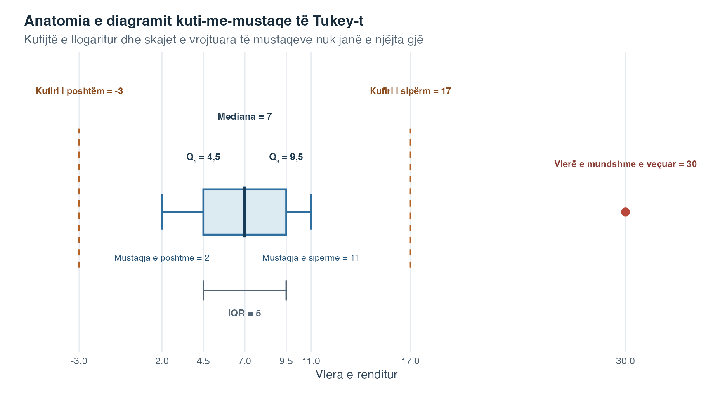
Lexoje figurën duke nisur nga kutia dhe duke lëvizur nga jashtë. Q1 dhe Q3 përfshijnë gjysmën e mesme të vlerave të renditura, prandaj largësia mes tyre është IQR-ja. Mediana e ndan kutinë te percentili i 50-të. Nga secili skaj i kutisë, 1.5 IQR përcakton një kufi të brendshëm, pra një cak të llogaritur që përdoret për të dalluar vlera potencialisht të pazakonta. Mustaqet nuk shtrihen vetvetiu deri te këta kufij. Ato ndalen te vrojtimi më i vogël dhe më i madh që gjendet ende brenda tyre. Prandaj pika e veçuar përtej kufirit të sipërm paraqitet si një vlerë e mundshme e veçuar. Ajo meriton shqyrtim, por vetëm grafiku nuk vërteton se është gabim dhe nuk e arsyeton fshirjen e saj.
Diagramet kuti-me-mustaqe janë veçanërisht të dobishme për krahasimin e grupeve krah për krah, sepse përmbledhin shumë informacion rreth shpërndarjes në një hapësirë të vogël.
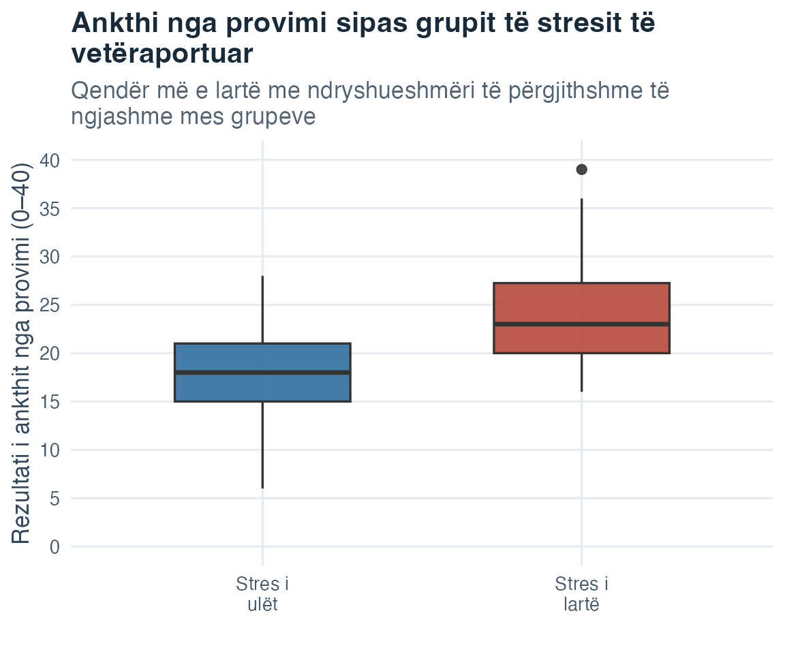
Përshtate çdo grafik me llojin e ndryshores. Përdor diagrame me shtylla ose diagrame rrethore të projektuara me kujdes për të dhëna nominale, diagrame të renditura me shtylla për të dhëna rendore dhe histograme ose diagrame kuti-me-mustaqe për të dhëna metrike. Shqyrtoje grafikun përpara se të përcaktosh përmbledhjet numerike përfundimtare dhe kontrollo që shkallët e boshteve, përkufizimet e klasave dhe emëruesit t’i paraqesin të dhënat me ndershmëri.
Në kërkime, shpesh duhet të ndryshohet shkalla e një ndryshoreje, për shembull duke e kthyer temperaturën nga Celsius në Fahrenheit, duke i shprehur pikët e një pyetësori si përqindje të maksimumit ose duke e zhvendosur një shkallë për të hequr një zhvendosje konstante. Këto veprime quhen transformime lineare.
Një transformim linear prodhon një ndryshore të re \(y\) nga një ndryshore origjinale \(x\) sipas rregullit:
\[y_i = a + b \cdot x_i\]
Këtu, \(a\) është një zhvendosje mbledhëse dhe \(b\) është një shtrirje shumëzuese. Transformimet lineare janë të fuqishme dhe të parashikueshme sepse ndikimi i tyre në statistikat përshkruese ndjek rregulla të thjeshta.
Mesatarja transformohet me të njëjtën formulë që zbatohet mbi pikat individuale të të dhënave:
\[\bar{y} = a + b \cdot \bar{x}\]
Varianca shumëzohet me \(b^2\). Zhvendosja \(a\) nuk ndikon në ndryshueshmëri, sepse zhvendosja e të gjitha vlerave me të njëjtën konstante nuk i ndryshon largësitë ndërmjet tyre:
\[s_y^2 = b^2 \cdot s_x^2\]
Devijimi standard shumëzohet me vlerën absolute të \(b\):
\[s_y = |b| \cdot s_x\]
Këto rregulla të lejojnë të parashikosh se çfarë do t’u ndodhë statistikave përmbledhëse sa herë që ndryshon shkallën e një ndryshoreje, pa e llogaritur gjithçka përsëri nga fillimi.
Shembulli 1: Nga Celsius në Fahrenheit. Formula e shndërrimit është \(F = 32 + 1.8 \cdot C\), prandaj \(a = 32\) dhe \(b = 1.8\). Supozo se temperatura mesatare në një grup të dhënash është \(20\,^{\circ}\mathrm{C}\) me devijim standard \(5\,^{\circ}\mathrm{C}\). Pas shndërrimit në Fahrenheit:
Zhvendosja mbledhëse prej 32 gradësh e ndryshon mesataren, por jo variancën ose devijimin standard. Faktori 1.8 e shkallëzon devijimin standard me 1.8 dhe variancën me \(1.8^2\). Së bashku, dy veprimet japin mesatare \(68\,^{\circ}\mathrm{F}\), variancë \(81\,(^{\circ}\mathrm{F})^2\) dhe SD \(9\,^{\circ}\mathrm{F}\). Mesatarja nuk fitohet vetëm me shkallëzim përpjesëtimor.
Shembulli 2: Ndryshimi i shkallës së pikëve të një pyetësori. Nëse një studiues dëshiron t’i shprehë pikët 0–40 të ankthit si përqindje të maksimumit, në një shkallë prej 100, transformimi është \(y = 0 + 2.5 \cdot x\), prandaj \(a = 0\) dhe \(b = 2.5\). Pikët 28 bëhen 70%. Nëse mesatarja e grupit ishte 20 dhe SD-ja 5, mesatarja e re është \(2.5 \cdot 20 = 50\) dhe SD-ja e re është \(2.5 \cdot 5 = 12.5\).
Kuptimi i transformimeve lineare parandalon ngatërrimin sa herë që ndryshohet shkalla e ndryshoreve, bëhen shndërrime ndërmjet instrumenteve ose krahasime mes studimeve.
Ky rregull i përgjithshëm matematikor është më i gjerë se transformimet e lejueshme që përkufizojnë nivelet e matjes. Për një shkallë intervalore, \(b\) duhet të jetë pozitiv që të ruhet drejtimi. Për një shkallë raporti, edhe \(a\) duhet të jetë zero që të ruhet zeroja e vërtetë. Një \(b\) negativ mund të përdoret për pikëzim të qëllimshëm të përmbysur, por ai i përmbys rangjet dhe drejtimin e interpretimit. Prandaj, ndryshorja e transformuar duhet emërtuar dhe interpretuar në përputhje me këtë.
Transformimi linear e ndryshon vendndodhjen dhe shkallën në mënyra të parashikueshme. Kur \(b > 0\), ai ruan orientimin e formës dhe renditjen. Kur \(b < 0\), ai e pasqyron shpërndarjen dhe e përmbys renditjen. Zhvendosja \(a\) e lëviz mesataren pa ndikuar në ndryshueshmëri, ndërsa \(|b|\) shkallëzon devijimin standard dhe \(b^2\) shkallëzon variancën.
Një rast i veçantë dhe shumë i rëndësishëm i transformimit linear është transformimi z, i quajtur edhe standardizim.
Për çdo vrojtim \(x_i\) në një grup të dhënash me mesatare \(\bar{x}\) dhe devijim standard \(s\), pikëzimi z është:
\[z_i = \frac{x_i - \bar{x}}{s}\]
Për një kampion jo konstant me devijim standard të përcaktuar dhe jozero, ky është një transformim linear me \(a = -\bar{x}/s\) dhe \(b = 1/s\). Dy pasoja rrjedhin drejtpërdrejt nga rregullat e përgjithshme të transformimit:
Pikëzimi z i çdo vrojtimi tregon sa devijime standarde mbi ose nën mesatare gjendet ai vrojtim.
Pse është e dobishme kjo? Mendo për dy studentë të vlerësuar me instrumente të ndryshme që synojnë të matin ankthin nga provimi. Studenti A merr 28 pikë në një shkallë 0–40, ku grupi përkatës i referimit ka mesatare 20 dhe SD 5. Pikëzimi i tij z është \((28 - 20)/5 = 1.6\). Studenti B merr 73 pikë në një shkallë 0–100, ku grupi përkatës i referimit ka mesatare 60 dhe SD 8. Pikëzimi i tij z është \((73 - 60)/8 = 1.625\).
Pikët e papërpunuara nuk janë drejtpërdrejt të krahasueshme, sepse përdorin shkallë të ndryshme. Pikëzimet z tregojnë se të dy studentët zënë një pozicion të ngjashëm relativ në shpërndarjet e tyre përkatëse të referimit, rreth 1.6 devijime standarde mbi mesatare. Ky krahasim ka kuptim vetëm kur instrumentet trajtojnë të njëjtin konstrukt dhe grupet e referimit janë të përshtatshme. Standardizimi nuk i bën konstruktet e ndryshme të këmbyeshme.
Kjo veti është themelore në statistikë. Koeficientët e standardizuar të regresionit, testet z, koeficientët e korrelacionit dhe shumë koncepte të tjera mbështeten në idenë e transformimit z. Përvetësimi i saj këtu i bën teknikat e mëvonshme shumë më të natyrshme.
Pikëzimi z nuk e ndryshon pozitën e një personi brenda shpërndarjes së zgjedhur të referimit. Ai vetëm e shpreh atë pozitë relative në një shkallë të matur me devijime standarde. Pikëzimi z +1.0 do të thotë “një devijim standard mbi mesataren e referimit”. Krahasimet ndërmjet instrumenteve kërkojnë ende një konstrukt të përbashkët, cilësi të krahasueshme të matjes dhe grupe të përshtatshme referimi.
Standardizimi e ndryshon shkallën e matjes, por e ruan modelin e shpërndarjes. Prandaj pyetja e natyrshme në vijim është: çfarë forme ka modeli që po ruhet?
Qendra dhe ndryshueshmëria përshkruajnë dy përmasa të një shpërndarjeje, por nuk e karakterizojnë plotësisht atë. Forma tregon si janë vendosur vlerat në të gjithë amplitudën dhe ndikon në zgjedhjen e statistikave përmbledhëse, interpretimin e dallimeve ndërmjet grupeve dhe kuptimin e procesit psikologjik në themel. Grupet e vogla mësimore të të dhënave më poshtë u ndërtuan që secila formë të shihet lehtë. Ato nuk janë matje nga njerëz realë.
Simetria, modaliteti dhe kurtoza përshkruajnë përmasa të veçanta që mund të shfaqen së bashku. Modaliteti përshkruan sa kulme të qarta ose përqendrime kryesore ka një shpërndarje dhe si paraqiten ato. Kurtoza përshkruan sa lehtë shfaqen vlera larg në bishta, krahasuar me një shpërndarje reference simetrike në formë kambane me të njëjtën shpërhapje të përgjithshme. Një shpërndarje mund të jetë simetrike dhe bimodale ose e anuar djathtas dhe unimodale. Përshkruaje çdo përmasë me rëndësi, në vend që t’i vendosësh shpërndarjes një etiketë të vetme të përgjithshme.
Shpërndarjet simetrike duken përafërsisht njësoj në të dyja anët e qendrës. Vlerat mbi dhe nën mesatare paraqiten me frekuencë afërsisht të barabartë. Në një shpërndarje plotësisht simetrike, mesatarja dhe mediana përkojnë saktësisht. Lakorja në formë kambane është shembulli klasik i një shpërndarjeje simetrike.
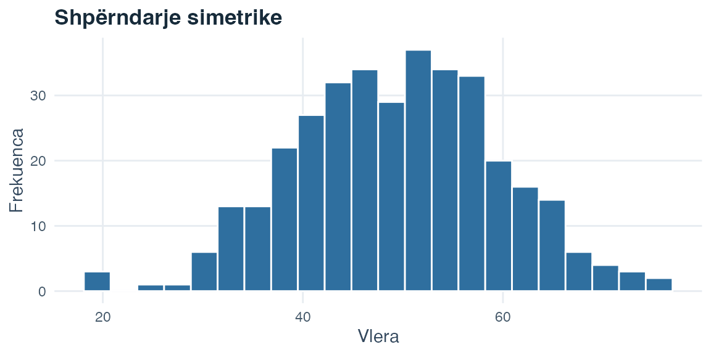
Çfarë të vëresh. Shtyllat ngrihen drejt një kulmi qendror dhe pastaj ulen në mënyrë të ngjashme në të dyja anët. Bishtat majtas dhe djathtas kanë gjatësi të krahasueshme, prandaj asnjëra anë nuk përmban një varg dukshëm më të gjatë vlerash.
Shpërndarjet e anuara djathtas, të quajtura edhe të anuara pozitivisht, kanë një bisht të gjatë drejt vlerave të larta. Shumica e vrojtimeve grumbullohen te vlerat më të ulëta, por një pakicë vlerash shumë të larta e zgjat bishtin djathtas. Mesatarja shpesh e tejkalon medianën, sepse është e ndjeshme ndaj këtyre vlerave të larta, por kjo renditje është prirje dhe jo përkufizim ose provë e asimetrisë. Kohët e reagimit në detyra njohëse, të ardhurat dhe numërimet e sjelljeve të rralla shpesh anojnë djathtas. Shumica e njerëzve japin vlera të ulëta deri mesatare, ndërsa disa japin vlera shumë mbi pjesën tjetër.
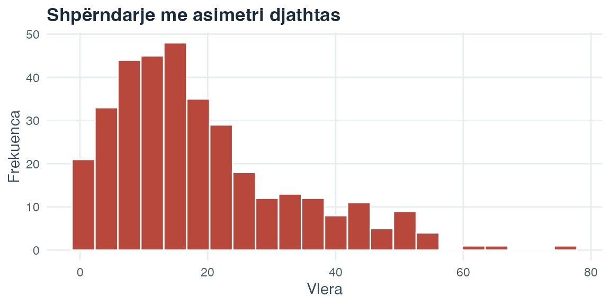
Çfarë të vëresh. Shtyllat më të larta përqendrohen te vlerat më të ulëta dhe formojnë një kulm kryesor në anën e majtë të grafikut. Me rritjen e vlerave, shtyllat bëhen më të shkurtra dhe vazhdojnë më larg drejt skajit të lartë. Ky varg i zgjatur shtyllash është bishti i djathtë që i jep emrin shpërndarjes.
Shpërndarjet e anuara majtas, të anuara negativisht, e pasqyrojnë këtë model. Shumica e vlerave përqendrohen në skajin e lartë të shkallës, ndërsa një pakicë vlerash shumë të ulëta krijon një bisht të gjatë majtas. Mesatarja shpesh bie nën medianën, por grafiku dhe shpërndarja më e gjerë duhet ta vërtetojnë formën. Pikët në një test shumë të lehtë, ku shumica e studentëve dalin mirë dhe vetëm disa kanë vështirësi, shpesh anojnë majtas.
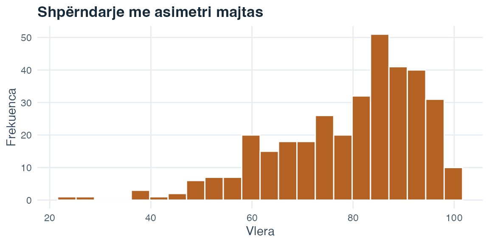
Çfarë të vëresh. Këtu shtyllat më të larta përqendrohen te vlerat më të larta dhe formojnë një kulm kryesor në anën e djathtë. Shtyllat rrallohen dhe vazhdojnë më larg drejt skajit të ulët. Ky varg më i gjatë në anën e vlerave të ulëta është bishti i majtë.
Shpërndarjet unimodale kanë një kulm të vetëm, pra një interval vlerash paraqitet më shpesh se pjesa tjetër. Një kodër e vetme e bën më të lehtë që një masë e qendrës dhe një masë e shpërhapjes të përmbledhin një përqendrim kryesor të vlerave. Vetëm një kulm nuk vërteton se një metodë statistikore e mëvonshme është e përshtatshme. Secila metodë ka kushte të tjera që do të paraqiten kur të mësohet ajo metodë.
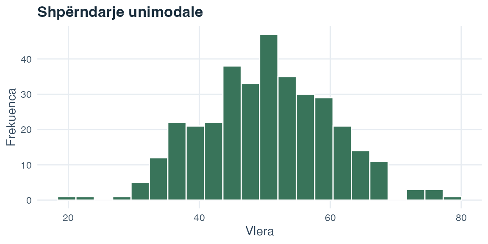
Çfarë të vëresh. Lartësitë e shtyllave formojnë një kulm të vetëm të qartë pranë qendrës dhe ulen drejt të dy bishtave. Tipari përcaktues është kulmi i vetëm. Një shpërndarje unimodale nuk duhet të jetë patjetër plotësisht simetrike.
Shpërndarjet bimodale kanë dy kulme të dallueshme. Ky model mund të sugjerojë një përzierje procesesh ose nënpopullatash, por vetëm grafiku nuk e identifikon shkakun e tyre. Një histogram i pikëve të provimit mund të tregojë kulme në 55 dhe 85 nëse studentët me modele të ndryshme përgatitjeje përzihen së bashku. Raportimi vetëm i një mesatareje të vetme, ndoshta 70, mund t’i fshihte të dy kulmet. Hetoje burimin e modelit, paraqite shpërndarjen e plotë dhe përshkruaji nëngrupet veçmas vetëm kur atë interpretim e mbështet një ndryshore grupimi e mbrojtshme nga ana përmbajtësore.
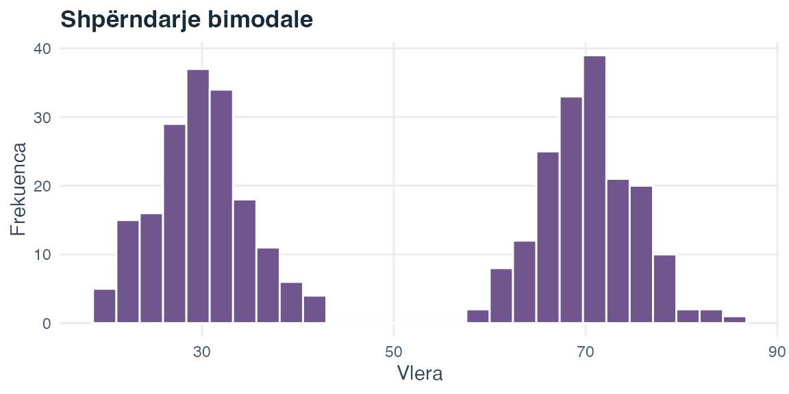
Çfarë të vëresh. Dy grupe të ndara shtyllash të larta formojnë dy kulme, njërin pranë 30 dhe tjetrin pranë 70. Shtyllat më të shkurtra ndërmjet tyre krijojnë një luginë të dukshme, ndërsa shtyllat e jashtme hollohen në dy bishtat. Një mesatare e vetme pranë luginës nuk do ta përshkruante mirë asnjërin përqendrim kryesor.
Shpërndarjet me kurtozë të lartë përmbajnë më shumë vlera jashtëzakonisht të largëta sesa një shpërndarje simetrike në formë kambane me të njëjtën shpërhapje të përgjithshme. Prandaj, ato kanë më shumë gjasa të përmbajnë vrojtime larg qendrës. Mund të shfaqet një kulm qendror i lartë, si në shembullin e ndërtuar më poshtë, por lartësia e kulmit nuk e përcakton kurtozën.
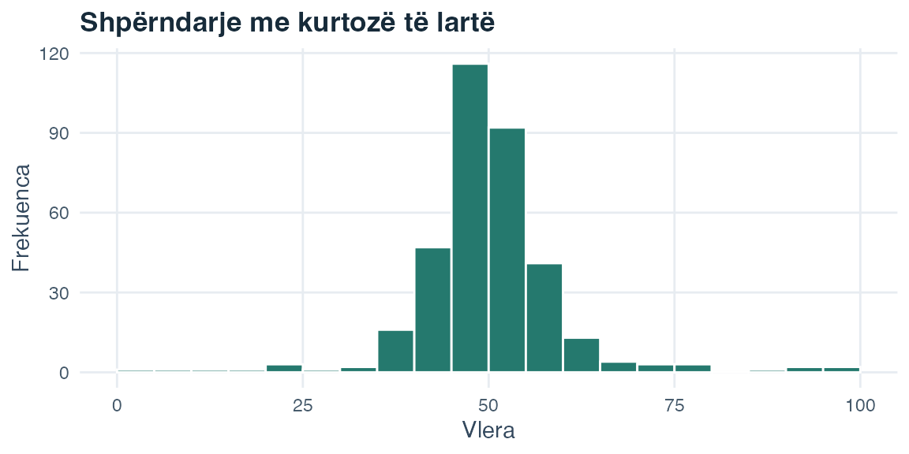
Çfarë të vëresh. Një grup i ngushtë shtyllash shumë të larta krijon një kulm të mprehtë qendror, por disa vrojtime arrijnë gjithashtu larg në të dy bishtat. Këto vlera të largëta në bishta, dhe jo vetëm lartësia e shtyllës qendrore, janë shenja e rëndësishme e kurtozës më të lartë.
Shpërndarjet me kurtozë të ulët përmbajnë më pak vlera jashtëzakonisht të largëta sesa një shpërndarje simetrike në formë kambane me të njëjtën shpërhapje të përgjithshme. Shembulli më poshtë i shpërndan vlerat pothuajse njëtrajtshëm në një interval të caktuar, prandaj bishtat e tij përfundojnë në kufij të qartë. Mund të shfaqet një qendër e rrafshët, por kjo nuk është vetia përcaktuese. Të dy shembujt e kurtozës përdorin të njëjtën madhësi kampioni, të njëjtin devijim standard të synuar, të njëjtët kufij klasash dhe të njëjtën shkallë horizontale, që sjellja e bishtave të mos ngatërrohet me shpërhapjen e përgjithshme ose me zgjedhjet grafike.
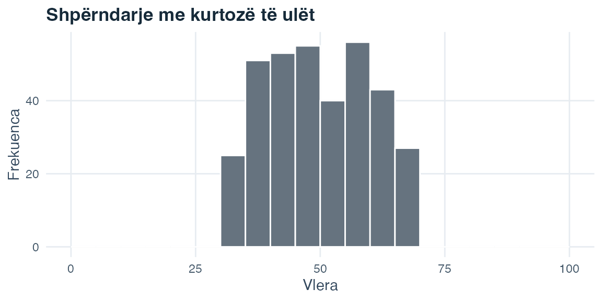
Çfarë të vëresh. Shtyllat shpërndahen më njëtrajtshëm në një interval qendror të kufizuar, prandaj nuk ka një kulm të mprehtë qendror. Ato ndalen gjithashtu para se të arrijnë bishtat e largët që shihen në grafikun me kurtozë të lartë. Kur i krahason drejtpërdrejt dy figurat, të dyja kanë të njëjtin devijim standard të synuar. Megjithatë, shembulli me kurtozë të lartë bashkon një qendër të dendur me disa vlera shumë të largëta, ndërsa shembulli me kurtozë të ulët i shpërndan vlerat më njëtrajtshëm dhe përmban më pak vlera të skajshme në bishta. Ky krahasim tregon pse vetëm lartësia e kulmit nuk mund ta përcaktojë kurtozën.
Forma dhe zgjedhja e statistikave përmbledhëse janë të lidhura ngushtë. Për shpërndarjet simetrike dhe unimodale, mesatarja dhe devijimi standard shpesh japin një përshkrim të dobishëm. Për shpërndarjet shumë të anuara, mediana dhe IQR-ja zakonisht janë më informuese, sepse vlerat e skajshme nuk i tërheqin. Për shpërndarjet bimodale, një qendër e vetme mund të fshehë strukturë të rëndësishme. Paraqite shpërndarjen dhe heto shpjegimet e mundshme përpara se të vendosësh nëse arsyetohet një analizë sipas nëngrupeve. Paraqitja pamore e të dhënave përpara zgjedhjes së përmbledhjeve është pjesë thelbësore e këtij vendimi.
Forma e shpërndarjes ndihmon në përcaktimin e përmbledhjeve informuese. Të dhënat simetrike dhe unimodale shpesh mbështesin mesatare dhe devijime standarde. Të dhënat e anuara shpesh kërkojnë mediana dhe IQR. Për të dhënat bimodale, kulmet duhen paraqitur dhe hetuar. Përmbledhjet e veçanta të nëngrupeve arsyetohen vetëm kur grupimi ka mbështetje përmbajtësore. Paraqiti gjithmonë të dhënat në mënyrë pamore përpara zgjedhjes së një përmbledhjeje, sepse një tabelë e vogël me vlera të përgjithshme mund ta fshehë formën.
Paraqitjet pamore e drejtojnë vëmendjen para se shumica e lexuesve t’i shqyrtojnë numrat e saktë. Një grafik mashtrues nuk ka nevojë të përmbajë një vlerë të rreme. Zgjedhjet për boshtet, format, kategoritë, emëruesit dhe kontekstin e lënë jashtë mund ta bëjnë një tipar mbizotërues dhe një tjetër pothuajse të padukshëm. Të mësosh të ndalesh te këto zgjedhje është një aftësi themelore e leximit kritik të të dhënave.
Sa herë që një grafik krijon një përshtypje të fortë, bëji vetes tri pyetje. Cili tipar pamor ma tërhoqi vëmendjen i pari? Cilën madhësi numerike duhet të paraqesë ai tipar? A do ta ndryshonte historinë që po shoh një ndryshim i arsyeshëm në paraqitje? Shembujt vijues tregojnë pse këto pyetje kanë rëndësi.
Shkurtimi i boshtit y. Kur boshti vertikal i një diagrami me shtylla fillon mbi zero, një dallim i vogël absolut mund ta zërë pothuajse tërë hapësirën e vizatimit. Gjatësia e shtyllës zakonisht lexohet nga një nivel fillestar, prandaj heqja e pjesës më të madhe të atij niveli e zmadhon raportin pamor midis shtyllave. Vlera 72 është vetëm rreth 6% më e madhe se 68, por një diagram që fillon në 64 mund ta bëjë njërën shtyllë të duket disa herë më e gjatë se pjesa e dukshme e tjetrës.
Ngjeshja ose shtrirja e shkallës. Ndryshimi i hapësirës ose shtrirjes së një boshti e ndryshon pjerrësinë e dukshme të një vije ose madhësinë e dukshme të një dallimi. Një vijë që rritet nga 20 në 22 në një bosht y nga 0 në 100 duket pothuajse e rrafshët. E njëjta vijë në një bosht y nga 19 në 23 duket e pjerrët. Një hapësirë e lartë dhe e ngushtë mund ta bëjë vijën të duket edhe më e pjerrët, ndërsa një hapësirë e ulët dhe e gjerë mund ta rrafshojë. Ndryshimi numerik mbetet dy njësi në çdo version, prandaj interpretoji vlerat e boshtit para se të reagosh ndaj këndit.
Dy diagramet vijuese përmbajnë të njëjtat pikëzime mesatare të trilluara të mirëqenies, 68 dhe 72. Ndryshon vetëm shtrirja vertikale e paraqitur.
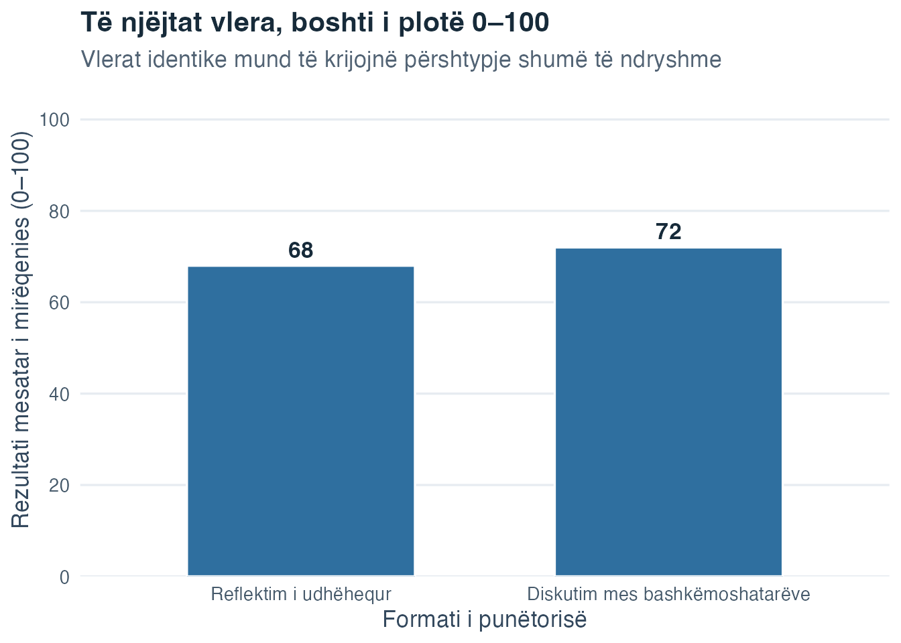
Në shkallën e plotë 0–100, dallimi prej katër pikësh duket modest në raport me shtrirjen e plotë të instrumentit. Nga etiketat mund t’i lexosh prapë të dyja vlerat e sakta.
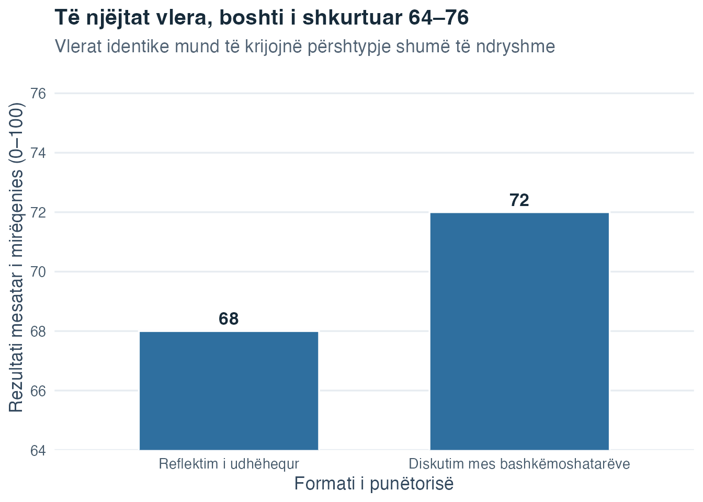
Diagrami i shkurtuar bën që i njëjti dallim prej katër pikësh ta mbizotërojë paraqitjen. Një shkallë e kufizuar mund t’i ndihmojë lexuesit të shqyrtojnë ndryshime të vogla kur etiketohet qartë, por shkurtimi i shtyllave është i rrezikshëm sepse gjatësia e shtyllës interpretohet nga një vijë bazë. Një diagram me pika në një shkallë të ngushtë dhe të etiketuar qartë shpesh është zgjedhje më e ndershme kur një shtrirje e ngushtë ka rëndësi përmbajtësore.
Problemi qëndron te mospërputhja midis sinjalit pamor dhe krahasimit të synuar. Shtyllat e ftojnë lexuesin të krahasojë gjatësi, prandaj zeroja merr një rol të veçantë. Pikat e ftojnë të krahasojë pozicione dhe mund të funksionojnë mirë në një bosht të kufizuar që etiketohet qartë. Nëse nevojitet një shtrirje e ngushtë, thuaje këtë në titullin shpjegues, trego vlerat e sakta dhe zgjidh një formë grafike që nuk sugjeron raporte mashtruese të gjatësive.
Gjerësi të pabarabarta të klasave në histograme. Kur klasat e histogramit kanë gjerësi të ndryshme, frekuencën duhet ta paraqesë sipërfaqja e secilës shtyllë, jo lartësia. Një klasë dy herë më e gjerë se të tjerat duhet të vizatohet me gjysmën e lartësisë për të paraqitur të njëjtin numër vrojtimesh. Nëse klasat më të gjera vizatohen me të njëjtën lartësi si ato më të ngushta, ato duken sikur përmbajnë më shumë të dhëna nga ç’kanë vërtet. Kontrollo gjithmonë nëse klasat e histogramit kanë gjerësi të barabartë përpara se t’i interpretosh lartësitë si frekuenca.
Edhe kur të gjitha klasat kanë gjerësi të barabartë, ndryshimi i asaj gjerësie mund ta ndryshojë hollësinë e dukshme. Këto dy histograme përdorin të njëjtat 160 vrojtime të ankthit nga provimi:
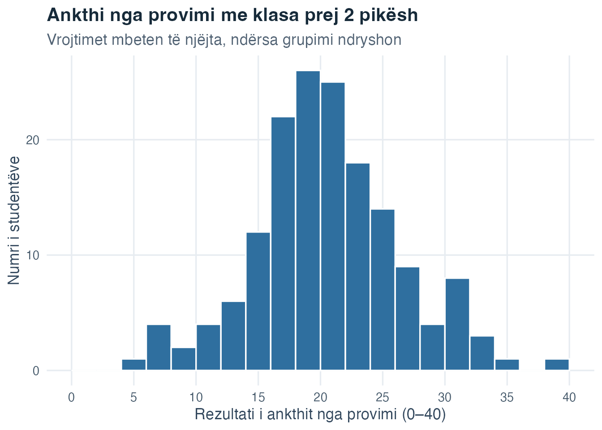
Klasat dy-pikëshe tregojnë ngritje dhe ulje të vogla lokale. Disa nga këto parregullsi pasqyrojnë ndryshueshmërinë e një kampioni të fundmë dhe jo tipare të qëndrueshme të shpërndarjes.
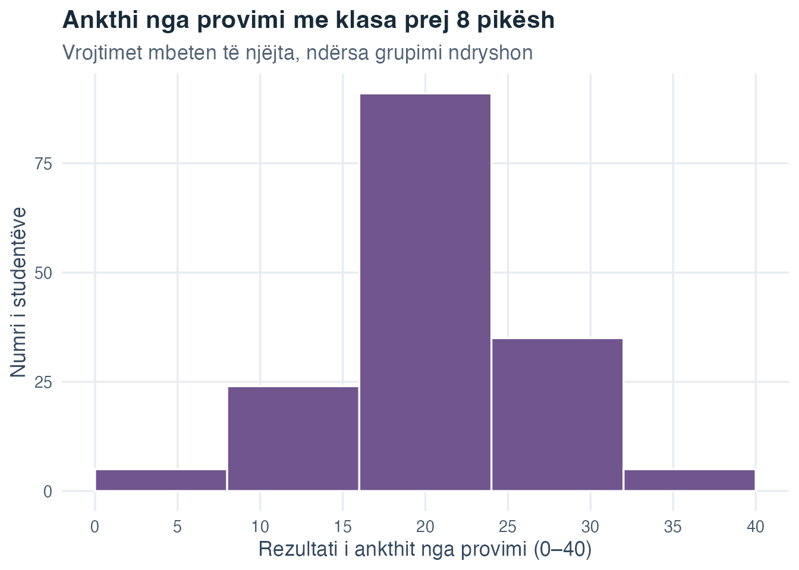
Klasat tetë-pikëshe theksojnë përqendrimin e përgjithshëm pranë qendrës dhe fshehin disa hollësi lokale. Madhësia e kampionit, vrojtimet, amplituda, mesatarja dhe devijimi standard mbeten të pandryshuara. Asnjëra paraqitje nuk është vetvetiu e pandershme. Problemi lind kur gjerësia e klasave zgjidhet vetëm sepse krijon një kulm dramatik, fshin një zbrazëti të papërshtatshme ose sugjeron disa grupe që zhduken me zgjedhje të tjera të arsyeshme. Krahaso më shumë se një grupim të mbrojtshëm dhe raporto rregullin e zgjedhur kur një përfundim pamor varet prej tij.
Numërimet dhe përqindjet me emërues të ndryshëm. Mendo se përmirësohen 24 nga 40 nxënës në Punëtorinë A dhe 30 nga 100 nxënës në Punëtorinë B. Numërimet e papërpunuara e bëjnë Punëtorinë B të duket më e madhe, sepse 30 është më shumë se 24. Përqindjet tregojnë një histori tjetër. Në A u përmirësuan 60%, ndërsa në B 30%. Zgjedhja vetëm e numërimeve ose vetëm e përqindjeve mund ta drejtojë krahasimin. Kur madhësitë e grupeve ndryshojnë, trego numëruesin dhe emëruesin.
Përqindjet pa emëruesin. Pohimi se “38% u përmirësuan” lë pa përgjigje pyetje të rëndësishme. A ishin 19 nga 50 persona apo 1,900 nga 5,000? Si u përkufizua përmirësimi? Sa të dhëna mungonin? E njëjta përqindje mund të mbështetet në sasi shumë të ndryshme evidence. Raportimi përzgjedhës vetëm i një përqindjeje të favorshme mund të fshehë gjithashtu rezultate që mbetën të pandryshuara ose u përkeqësuan.
Sipërfaqja, vëllimi dhe figurat zbukuruese. Një simbol që është dy herë më i lartë dhe dy herë më i gjerë zë katër herë më shumë sipërfaqe. Nëse vlera e synuar vetëm është dyfishuar, figura krijon një ndryshim pamor shumë më të madh. Shtyllat tredimensionale sjellin një problem të ngjashëm, sepse perspektiva dhe vëllimi konkurrojnë me lartësinë që duhet lexuar. Për krahasime të zakonshme përdor pozicion ose gjatësi njëdimensionale dhe mos lejo që elementet zbukuruese të mbajnë kuptimin statistikor.
Periudhat kohore të përzgjedhura dhe kategoritë e lëna jashtë. Një prirje mund të duket vazhdimisht pozitive kur grafiku fillon menjëherë pas një viti jashtëzakonisht të dobët dhe mbaron në një kulm të përkohshëm. Një kategori mund të duket mbizotëruese kur hiqet një grup i rëndësishëm krahasimi. Pyet pse periudha e paraqitur fillon dhe mbaron pikërisht aty, nëse janë përfshirë të gjitha kategoritë përmbajtësore dhe nëse i njëjti model mbetet kur pamja zgjerohet pak.
Dy boshte vertikale. Vendosja e dy vargjeve në një grafik me boshte y të veçanta lejon që secili bosht të shkallëzohet në mënyrë të pavarur. Pothuajse çdo dy vija mund të bëhen të ngrihen së bashku duke zgjedhur shtrirje të përshtatshme. Kjo mund të sugjerojë një lidhje përmes përputhjes pamore edhe kur lidhja numerike është e dobët ose njësitë nuk kanë lidhje. Panele të ndara me boshte kohore të përputhura, krahasime të drejtpërdrejta numerike ose një diagram shpërndarjeje shpesh e bëjnë lidhjen më të lehtë për t’u vlerësuar me ndershmëri.
Tabela vijuese i kthen këta shembuj në një rutinë të ripërdorshme leximi:
| Zgjedhja e paraqitjes | Pyetja që duhet të bësh | Pse mund të mashtrojë | Përgjigjja më transparente |
|---|---|---|---|
| Bosht i shkurtuar i shtyllave | Ku fillon niveli bazë? | Gjatësia e dukshme e shtyllës mund ta zmadhojë një dallim të vogël. | Filloji shtyllat në zero ose përdor pika të etiketuara qartë. |
| Boshte të shtrira ose të ngjeshura | Sa i madh është ndryshimi numerik? | Raporti i përmasave e ndryshon pjerrësinë e dukshme. | Lexo vlerat e shenjave të boshtit dhe trego ndryshimet e sakta. |
| Klasat e histogramit | A do ta tregonte të njëjtën strukturë një gjerësi tjetër e arsyeshme? | Klasat e përzgjedhura mund të shpikin ose fshehin kulme dhe zbrazëti. | Krahaso gjerësi të mbrojtshme dhe trego rregullin. |
| Vetëm numërimi ose përqindja | Cilët janë numëruesi dhe emëruesi? | Madhësitë e pabarabarta të grupeve mund ta përmbysin krahasimin pamor. | Raporto së bashku numërimin, totalin dhe përqindjen. |
| Figura të shkallëzuara ose forma 3D | A rritet sipërfaqja ose vëllimi më shpejt se vlera? | Disa përmasa pamore e zmadhojnë ndryshimin e perceptuar. | Paraqite vlerën me pozicion ose gjatësi njëdimensionale. |
| Periudha ose kategori të zgjedhura | Cili kontekst i rëndësishëm mbetet jashtë kornizës? | Heqja mund të krijojë një prirje ose krahasim të volitshëm. | Shpjego periudhën dhe trego alternativa të rëndësishme. |
| Dy boshte y | A u zgjodhën dy shkallët në mënyrë të pavarur? | Zgjedhjet e boshteve mund të prodhojnë përputhje pamore artificiale. | Përdor panele të ndara e të përputhura ose analizo drejtpërdrejt lidhjen. |
Para se ta interpretosh një paraqitje, kontrollo etiketat e boshteve, shtrirjet e shkallës, përkufizimet e klasave, emëruesit, madhësinë e kampionit, metodën e matjes, të dhënat që mungojnë dhe përmbledhjet numerike shoqëruese. Numrat dhe grafikët marrin kuptim nga zgjedhjet e matjes dhe paraqitjes që i prodhuan. Një titull shpjegues i qartë duhet t’i bëjë këto zgjedhje më të lehta për t’u shqyrtuar.
Grafikët dhe përqindjet mund të mashtrojnë edhe pa përdorur numra të rremë. Kontrollo pikën fillestare dhe amplitudën e boshtit, përkufizimin e klasave të histogramit, emëruesin, madhësinë e kampionit dhe metodën e matjes. Kjo shprehi të mbron nga mashtrimi dhe nga mundësia që t’i mashtrosh pa dashje të tjerët.
Këto gabime kanë një rrënjë të përbashkët: zbatimin ose interpretimin e një përmbledhjeje statistikore pa kontrolluar nëse ajo arsyetohet nga ndryshorja, shkalla e matjes dhe shpërndarja e vëzhguar. Kontrollo shkallën dhe cilësinë e të dhënave, shqyrto shpërndarjen, pastaj zgjidh dhe interpreto përmbledhjen.
Statistika përshkruese ka rëndësi sepse evidenca na arrin shpesh në formë të ngjeshur. Lajmet, diskutimet e politikave, artikujt shkencorë, raportet institucionale dhe pohimet e përditshme shpesh paraqesin një mesatare, një përqindje ose një grafik të bujshëm. Tani mund ta ngadalësosh këtë ngjeshje. Mund të pyesësh çfarë u mat, cilat raste hynë në grupin e të dhënave, nëse përmbledhja e zgjedhur i përshtatet shkallës, sa ndryshueshmëri rrethon qendrën dhe çfarë zbulon ose fsheh grafiku.
Kjo shprehi e ndryshon cilësinë e interpretimit. Një mesatare nuk mund të përfaqësojë më automatikisht çdo person. Një dallim mes grupeve të nxit të kontrollosh secilën shpërndarje. Një vlerë e pazakontë bëhet diçka që duhet hetuar në kontekst. Një grafik bindës shndërrohet në një varg zgjedhjesh për boshtet, kategoritë dhe emëruesit që tashmë di t’i shqyrtosh. Statistika përshkruese të jep një gjuhë për ta parë strukturën e evidencës para se të vendosësh çfarë do të thotë ajo.
Rrjedha e punës tani ka një logjikë të qartë. Niveli i matjes tregon cilat veprime kanë kuptim. Tabela e frekuencave tregon sa shpesh paraqiten vlerat. Masat e qendrës gjejnë një vlerë tipike, masat e shpërhapjes tregojnë sa ndryshojnë vlerat dhe grafikët zbulojnë modele që një numër i vetëm mund t’i fshehë. Standardizimi shpreh vendndodhjen e një vlere në njësi devijimi standard. Së bashku, këta hapa i shndërrojnë vrojtimet e papërpunuara në një përshkrim të mbrojtshëm të kampionit.
Tema tjetër shtron një pyetje të re. Këtu përshkruam vlerat që u vëzhguan. Te Probabiliteti do të pyesim cilat rezultate mund të ndodhin dhe sa të mundshme janë sipas një procesi të përcaktuar. Lidhja është e afërt. Frekuencat relative të kësaj teme bëhen probabilitete kur zgjedhim nga një grup i caktuar. Shpërndarjet marrin probabilitete krahas formave, ndërsa mesatarja dhe varianca bëhen veti të modeleve të probabilitetit. Më vonë, këto ide ndihmojnë të shpjegohet pse mesatarja e një kampioni ndryshon nga mesatarja e një kampioni tjetër.
Ruaj një zakon pune ndërsa ecën përpara. Fillimisht përcakto çfarë do të thotë secila ndryshore, pastaj shqyrto shpërndarjen e saj dhe vetëm atëherë llogarit ose ndërto një model. Probabiliteti mbështetet mbi këtë përshkrim të qartë dhe i shton atij një shpjegim të mbështetur për rezultatet e mundshme dhe gjasat e tyre.
Tani i bashkojmë idetë në një simulim. Simulimi është një shembull i ndërtuar me kompjuter që ndjek rregulla të zgjedhura për mësim. Ai na lejon të ushtrojmë një analizë të plotë me një grup të dhënash koherent, por nuk është matje e njerëzve realë dhe nuk mund të japë një gjetje nga bota reale.
Kompjuteri i krijon vlerat me një gjenerator të numrave të rastësishëm. Ky është një grup udhëzimesh kompjuterike hap pas hapi, i quajtur edhe algoritëm, që prodhon vlera me ndryshueshmëri të ngjashme me rastësinë. Megjithatë, programit i duhet një pikënisje. Ky numër fillestar quhet numër nisës (anglisht seed). Nëse dikush tjetër përdor të njëjtin numër nisës dhe të njëjtat udhëzime, gjeneratori prodhon sërish të njëjtat vlera. Rezultati është i riprodhueshëm, që do të thotë se çdo student mund ta rindërtojë dhe kontrollojë pikërisht të njëjtin shembull. Një numër tjetër nisës do të krijonte një grup tjetër të dhënash mësimore me strukturë të ngjashme.
Përfytyro, pra, një studim fiktiv ku 160 studentë të vitit të parë plotësojnë një pyetësor të shkurtër një javë përpara një provimi të rëndësishëm. Ky kontekst na jep arsye për të përdorur tërë rrjedhën përshkruese të punës: një tabelë e gjatë me pikëzime nuk tregon ende çfarë është tipike, sa ndryshojnë pikëzimet ose nëse dy grupe zënë pjesë të ndryshme të shkallës. Do të ecim ngadalë nga rreshtat e grupit të të dhënave te frekuencat, përmbledhjet numerike, grafikët, krahasimet e grupeve dhe pikëzimet e standardizuara.
Mbaji parasysh tri pyetje ndërsa zhvillohet shembulli:
Si duket shpërndarja e pikëzimeve të ankthit nga provimi në kampionin e vrojtuar? Cilat masa të qendrës dhe shpërhapjes e përshkruajnë me ndershmëri? A tregojnë një histori të njëtrajtshme përmbledhjet numerike dhe grafikët kur krahasohen studentët që raportojnë stres të tanishëm të ulët dhe të lartë?
Këto janë pyetje përshkruese. Ato pyesin si duket kampioni artificial dhe jo nëse stresi shkakton ankth.
Popullata e synuar dhe kampioni i vrojtuar. Popullata e synuar përbëhet nga studentët e vitit të parë që përgatiten për provime të krahasueshme. Grupi i vrojtuar i të dhënave është një kampion i simuluar prej 160 studentësh. Meqë këto vlera u krijuan dhe nuk u mblodhën nga ajo popullatë, ato mësojnë rrjedhën e punës së analizës, por nuk mund të mbështesin një vlerësim real të popullatës.
Për secilin student regjistrojmë:
id anonimStres i ulët kundrejt Stres i lartë)Grua, Burrë, Divers)| Ndryshorja | Roli dhe niveli i matjes | Trajtimi i përshtatshëm përshkrues |
|---|---|---|
id |
Identifikues nominal anonim | Përdore vetëm për të dalluar rreshtat; mos ia llogarit mesataren |
group |
Ndryshore nominale grupimi | Numërime, përqindje, diagram me shtylla ose rrethor dhe krahasime sipas grupeve |
gender |
Ndryshore nominale e sfondit | Numërime, përqindje dhe diagram me shtylla |
exam_anxiety |
Pikëzim me disa pohime, i formuar duke bashkuar disa përgjigje të pyetësorit dhe i trajtuar si përafërsisht intervalor | Mesatarja me devijimin standard (SD), mediana me diapazonin ndërkuartilor (IQR), histogrami, diagrami kuti-me-mustaqe dhe pikëzimet z |
sleep_hours |
Ndryshore e raportit | Shtrirja e besueshme, mesatarja me SD ose mediana me IQR, sipas formës |
satisfaction |
Vlerësim rendor 1–5 | Frekuencat e renditura, përqindjet, mediana dhe diagrami i renditur me shtylla |
Lexoje tabelën rresht pas rreshti. Tri ndryshoret e para janë etiketa. Numërimet dhe përqindjet janë të përshtatshme për grupin e stresit dhe gjininë, ndërsa identifikuesi përdoret vetëm për t’i mbajtur rreshtat të dallueshëm. Dy ndryshoret pasuese regjistrojnë sasi ose pikëzime numerike, prandaj qendra dhe shpërhapja mund të jenë të dobishme. Kënaqësia është e renditur, por largësitë ndërmjet pesë kategorive të përgjigjeve nuk janë patjetër të barabarta. Prandaj e ruajmë rendin e kategorive dhe theksojmë frekuencat dhe medianën. Identifikuesi përjashtohet qëllimisht nga llogaritjet, sepse shifrat e tij vetëm emërtojnë një rresht.
Si i krijon kompjuteri të dhënat. Mbajmë të njëjtin numër nisës gjatë gjithë faqes. Udhëzimet e krijojnë grupin e stresit dhe gjininë si kategori. Vlerat e gjumit dhe ankthit nga provimi ndryshojnë nga një student te tjetri, ndërsa grupit me stres të lartë i caktohet mesatare më e lartë ankthi dhe më pak orë mesatare gjumi. Kënaqësia priret të jetë më e ulët kur ankthi i shprehur si pikëzim z është më i lartë; Hapi 8 e shpjegon këtë shkallë të standardizuar. Në fund, vlerat mbahen brenda shtrirjes së mundshme të secilit pyetësor ose secilës shkallë matjeje. Këta janë përbërës të vendosur qëllimisht në shembull. Nuk janë zbulime për studentë realë.
Metodat e zgjedhura ndjekin nivelet e matjes dhe pyetjet fillestare. Tabelat e frekuencave përshkruajnë kategoritë nominale dhe rendore, ndërsa histogrami dhe përmbledhjet numerike përshkruajnë pikëzimin numerik të ankthit. Përmbledhjet sipas grupeve dhe diagramet kuti-me-mustaqe krahasojnë shpërndarjet pa e trajtuar emërtimin e grupit si sasi.
Hapi 1: Shqyrtimi i të dhënave të papërpunuara
Përpara llogaritjes së ndonjë statistike, shikoji gjithmonë së pari të dhënat e papërpunuara. Tabela më poshtë tregon të gjithë grupin e të dhënave. Mund t’i renditësh kolonat, të kërkosh vlera të caktuara dhe të lëvizësh nëpër të 160 studentët.
Ky shqyrtim i parë të ndihmon të kontrollosh nëse të dhënat duken të besueshme. Orët e vëzhguara të gjumit shkojnë nga 4.1 deri në 9.3 orë, pikët e ankthit nga provimi nga 6 deri në 39 dhe vlerësimet e kënaqësisë nga 2 deri në 5. Grupi i të dhënave përmban 0 vlera që mungojnë. Këto kontrolle nuk provojnë se çdo e dhënë është e saktë, por një vlerë e pamundur, një kod i papritur ose një model i vlerave që mungojnë, pra një prirje që vlerat të mungojnë në ndryshore ose grupe të caktuara, duhet hetuar përpara vazhdimit.
Pasi rreshtat dhe kodet duken të besueshme, hapi tjetër është të përmbledhim ndryshoret kategorike pa i trajtuar etiketat e tyre si sasi.
Hapi 2: Përshkrimi i ndryshoreve nominale (grupi i stresit dhe gjinia)
Grupi i stresit dhe gjinia janë ndryshore nominale. Ato i klasifikojnë studentët në kategori pa nënkuptuar ndonjë rend numerik. I përshkruajmë me numërime dhe përqindje.
| Grupi i stresit | n | % |
|---|---|---|
| Stres i ulët | 76 | 47.5% |
| Stres i lartë | 84 | 52.5% |
| Gjinia | n | % |
|---|---|---|
| Grua | 112 | 70.0% |
| Burrë | 42 | 26.2% |
| Divers | 6 | 3.8% |
Lexoje tabelën e grupit të stresit përgjatë secilit rresht. Kolona n jep numrin e rasteve, ndërsa kolona % e pjesëton atë numër me të 160 rastet dhe e shpreh rezultatin për çdo 100 raste. Grupi me stres të lartë përmban 84 studentë dhe grupi me stres të ulët përmban 76. Dy numërimet japin së bashku 160 dhe përqindjet e paraqitura japin 100%, përveç ndonjë dallimi nga rrumbullakimi.
Tabela e gjinisë ndjek të njëjtën strukturë, por kategoritë e saj i përgjigjen një pyetjeje tjetër. Ajo tregon 112 raste në kategorinë Grua, 42 në kategorinë Burrë dhe 6 në kategorinë Divers. Meqë këto janë etiketa nominale, tabela nuk ka kolonë kumulative dhe rendi i rreshtave nuk mbart kuptim sasior. Në këtë fazë, të dyja tabelat përshkruajnë vetëm kampionin artificial. Asnjëra nuk është evidencë për përbërjen e një popullate reale studentësh.
Hapi 3: Përshkrimi i një ndryshoreje rendore (kënaqësia me studimet)
Kënaqësia matet në një shkallë 1–5 dhe është rendore. Numrat më të mëdhenj nënkuptojnë kënaqësi më të lartë, por largësitë ndërmjet kategorive fqinje nuk supozohen të barabarta. E përshkruajmë me numërime dhe përqindje.
| Kënaqësia | n | % |
|---|---|---|
| 1 | 0 | 0.0% |
| 2 | 1 | 0.6% |
| 3 | 27 | 16.9% |
| 4 | 80 | 50.0% |
| 5 | 52 | 32.5% |
Tabela i ruan të pesë kategoritë e përgjigjeve, duke përfshirë vlerësimin 1 me frekuencë zero. Gjithsej 132 studentë (82.5%) zgjodhën 4 ose 5. Këto të dhëna të krijuara përqendrohen në skajin e kënaqur të shkallës rendore, ndërsa numërimi zero te vlerësimi 1 mbetet i dukshëm dhe nuk zhduket nga tabela.
Numërimet dhe përqindjet u përshtaten ndryshoreve kategorike. Ankthi nga provimi është sasior, prandaj tani përshkruajmë si vlerën e tij tipike, ashtu edhe shpërhapjen.
Hapi 4: Statistikat e përgjithshme përshkruese të ankthit nga provimi
exam_anxiety është një pikëzim i përgjithshëm i formuar duke mbledhur disa përgjigje të pyetësorit. E trajtojmë si përafërsisht intervalor, një supozim pune i zakonshëm për një shkallë të përmbledhur, por jo provë se dallimet ndërmjet pikëzimeve fqinje janë psikologjikisht të njëjta. Me këtë supozim, mesataret dhe devijimet standarde janë përmbledhje të dobishme; medianat dhe IQR-të mbeten kontrolle me vlerë.
| n | Mesatarja | Mediana | SD | IQR | Minimumi | Maksimumi |
|---|---|---|---|---|---|---|
| 160 | 21.1 | 21 | 5.9 | 7.2 | 6 | 39 |
Mesatarja e kampionit është 21.1 dhe mediana është 21, prandaj dy masat e qendrës japin pothuajse të njëjtën vlerë në këtë grup të dhënash. SD-ja është 5.9, IQR-ja është 7.2 dhe pikët e vëzhguara shkojnë nga 6 deri në 39. Afërsia e mesatares dhe medianës përputhet me histogramin afërsisht simetrik në Hapin 6, por nuk e provon vetë simetrinë.
Hapi 5: Krahasimi i ankthit ndërmjet grupeve të stresit
Studentët e vlerësuan veten me stres të ulët ose të lartë përpara provimit. Tani pyesim nëse niveli i matur i ankthit nga provimi e pasqyron këtë vetëklasifikim. Statistikat përshkruese sipas grupeve japin përgjigjen e parë.
| Grupi i stresit | n | Mesatarja | Mediana | SD | IQR |
|---|---|---|---|---|---|
| Stres i ulët | 76 | 17.7 | 18 | 4.9 | 6.0 |
| Stres i lartë | 84 | 24.2 | 23 | 5.0 | 7.2 |
Mesatarja dhe mediana janë më të larta në grupin me stres të lartë, siç pritet nga skema e simulimit. Devijimet standarde të grupeve janë pothuajse të barabarta, ndërsa grupi me stres të lartë ka IQR disi më të madh. Prandaj dallimi kryesor përshkrues është niveli më i lartë i ankthit dhe jo ndryshueshmëria dukshëm më e madhe.
Ky krahasim përshkrues tregon një dallim të qartë në vendndodhje brenda këtij grupi të dhënash. Tema 3 do të shtrojë pyetjen e veçantë nëse një dallim në kampion jep evidencë për një dallim në popullatë.
Tabela e ngjesh secilën shpërndarje në disa numra. Histogrami është kontrolli i radhës, sepse tregon formën e përgjithshme që këta numra nuk mund ta shfaqin.
Hapi 6: Paraqitja pamore e shpërndarjes së ankthit nga provimi
Histogrami jep një pamje të drejtpërdrejtë të formës së shpërndarjes së plotë.
Histogrami tregon sa studentë bien në secilën shtrirje të pikëve të ankthit. Shumica grumbullohen rreth vlerave mesatare. Pikët pakësohen drejt të dyja skajeve, prandaj ankthi shumë i ulët dhe shumë i lartë janë relativisht të rrallë. Forma e përgjithshme duket afërsisht simetrike dhe mesatarja e vëzhguar prej 21.1 dhe mediana prej 21 përputhen me këtë lexim pamor pa e provuar simetrinë.
Histogrami i përgjithshëm i bashkon të dy grupet e stresit. Për të parë nëse qendrat dhe shpërhapjet e tyre ndryshojnë, tani i ndajmë të njëjtat pikëzime ankthi sipas grupit.
Hapi 7: Paraqitja pamore e dallimeve mes grupeve me diagram kuti-me-mustaqe
Diagramet kuti-me-mustaqe përmbledhin qendrën, shpërhapjen dhe vlerat e mundshme të veçuara për secilin grup. Ato janë shumë efikase për krahasimin e grupeve krah për krah. Mustaqet e tyre shtrihen nga kutia drejt vlerave më të largëta që ende përfshihen nga rregulli i diagramit kuti-me-mustaqe. Një pikë përtej një mustaqeje është një vlerë e mundshme e veçuar: meriton shqyrtim në kontekst, por nuk është automatikisht gabim.
Çdo kuti përfaqëson 50% qendrore të pikëve të ankthit për një grup dhe shtrihet nga Q1 deri në Q3. Vija horizontale brenda kutisë shënon medianën. Kutia e grupit me stres të lartë është qartësisht më lart në boshtin vertikal. Studenti tipik i këtij grupi raporton më shumë ankth.
Lartësia e secilës kuti, pra IQR-ja, dhe gjatësia e mustaqeve tregojnë ndryshueshmërinë. Kutia e grupit me stres të lartë është disi më e lartë, por devijimet standarde të grupeve janë shumë të ngjashme. Pikat përtej mustaqeve janë të pazakonshme krahasuar me studentët e tjerë të të njëjtit grup dhe meritojnë vëmendje përpara nxjerrjes së përfundimeve.
Së bashku me tabelën e Hapit 5, diagrami kuti-me-mustaqe tregon se dallimi kryesor mes grupeve lidhet me vendndodhjen: studentët me stres të lartë priren të raportojnë më shumë ankth. Pjesa qendrore prej 50% e pikëzimeve të tyre është disi më e shpërndarë, por devijimet standarde pothuajse të barabarta nuk mbështesin një dallim të qartë në ndryshueshmërinë e përgjithshme.
Hapi 8: Standardizimi i pikëve të ankthit me transformimin z
Shkalla e ankthit nga provimi shkon nga 0 deri në 40 dhe është e veçantë për këtë instrument. Për ta shprehur pozicionin e secilit student brenda këtij kampioni në njësi të devijimit standard, zbatojmë transformimin z. Për çdo vrojtim, zbresim mesataren e përgjithshme të kampionit dhe pjesëtojmë me devijimin standard të përgjithshëm të kampionit.
Pikëzimi z për studentin \(i\) është:
\[z_i = \frac{x_i - \bar{x}}{s}\]
Rezultati është ruajtur në grupin e të dhënave si z_exam_anxiety.
Tabela më poshtë tregon pikët e papërpunuara të ankthit dhe pikëzimin përkatës z për dymbëdhjetë studentët e parë.
| ID-ja e studentit | Grupi i stresit | Pikët e ankthit | Pikëzimi z |
|---|---|---|---|
| 1 | Stres i lartë | 22 | 0.15 |
| 2 | Stres i lartë | 25 | 0.66 |
| 3 | Stres i ulët | 18 | -0.53 |
| 4 | Stres i lartë | 24 | 0.49 |
| 5 | Stres i lartë | 33 | 2.02 |
| 6 | Stres i ulët | 14 | -1.21 |
| 7 | Stres i lartë | 30 | 1.51 |
| 8 | Stres i ulët | 18 | -0.53 |
| 9 | Stres i lartë | 20 | -0.19 |
| 10 | Stres i lartë | 24 | 0.49 |
| 11 | Stres i ulët | 22 | 0.15 |
| 12 | Stres i lartë | 22 | 0.15 |
Lexoje secilin rresht nga pikëzimi i papërpunuar te pikëzimi i standardizuar. Shenja tregon drejtimin nga mesatarja e kampionit: një pikëzim z pozitiv ndodhet mbi të dhe një pikëzim z negativ nën të. Madhësia tregon largësinë në njësi devijimesh standarde. Një student me z = 0 ka pikëzim saktësisht në mesataren e kampionit. Një student me z = +1.5 ka pikëzim 1.5 devijime standarde mbi mesataren e kampionit, ndërsa një student me z = -1.0 ka pikëzim një devijim standard nën të. Tabela nuk i rendit studentët si më të mirë ose më të dobët; vetëm shpreh ku ndodhet secili pikëzim brenda këtij kampioni të caktuar artificial.
Histogrami më poshtë përdor versione të transformuara të kufijve të klasave të histogramit origjinal, pra skajeve që përcaktojnë cilat vlera hyjnë në secilën shtyllë. Prandaj, shtyllat e tij e ruajnë saktësisht formën e histogramit origjinal, ndërsa shkalla horizontale ndryshon. Mesatarja tani është 0 dhe devijimi standard është 1.
Vija vertikale e ndërprerë shënon z = 0, mesataren e kampionit. Pikëzimet z të vëzhguara shtrihen nga -2.57 deri në 3.04. Vlerat larg zeros meritojnë hetim në kontekst, por vetëm largësia nuk vërteton se një vlerë është e gabuar ose duhet fshirë.
Të marra së bashku, tabelat dhe figurat tregojnë një histori të njëtrajtshme për këtë kampion artificial: grupi me stres të lartë ka qendër më të lartë të ankthit, të dy grupet kanë shpërhapje të përgjithshme të ngjashme dhe standardizimi i ndryshon njësitë pa ndryshuar formën e histogramit. Hapi i fundit është të ndajmë atë që mëson kjo rrjedhë pune nga pohimet që nuk mund t’i mbështesë.
Ky shembull është i simuluar, prandaj nuk është matur asnjë person dhe nuk mund të bëhet asnjë pohim për popullatën. Procesi i gjenerimit të të dhënave krijon qëllimisht dallime mesatare ndërmjet grupeve të stresit. Kjo do të thotë se gjetja e atyre dallimeve më vonë rikthen një model të vendosur në simulim dhe nuk zbulon evidencë të re. Një studim real do të kishte nevojë për një rregull të qartë se kush mund të përfshihet, evidencë se pyetësorët matin karakteristikat e synuara, kontroll të kujdesshëm të vendeve ku mungojnë vlera dhe një projektim të përshtatshëm për pohimet e synuara.
Shembulli ndoqi të njëjtin rend leximi të zhvilluar në pjesën Teoria. Fillimisht identifikuam rastet dhe ndryshoret, e lidhëm secilën ndryshore me nivelin e saj të matjes dhe shqyrtuam rreshtat e papërpunuar para se të llogaritnim ndonjë madhësi. Më pas, tabelat e frekuencave përshkruan ndryshoret kategorike, ndërsa mesatarja, mediana, devijimi standard, diapazoni ndërkuartilor dhe përmbledhja me pesë numra përshkruan veçori të ndryshme të shpërndarjes së pikëzimeve të ankthit.
Paraqitjet i bënë të dukshme këto përmbledhje. Tabelat e frekuencave treguan numërimet dhe përqindjet e kategorive, histogrami tregoi formën e shpërndarjes së pikëzimit sasior dhe diagramet kuti-me-mustaqe krah për krah bënë të krahasueshme vendndodhjen e grupeve, shpërhapjen qendrore dhe vlerat e pazakonta. Transformimi z e përfundoi rrjedhën e punës duke e kthyer shkallën e ankthit në njësi të devijimit standard pa ia ndryshuar formën shpërndarjes. Së bashku, këta hapa tregojnë pse statistika përshkruese nuk është një listë formulash të veçuara: çdo tabelë, numër dhe figurë i përgjigjet një pjese të pyetjeve fillestare dhe interpretimet e tyre duhet të përputhen para se të kalojmë te probabiliteti ose inferenca.
Zgjidh PDF për shtypje ose Word për redaktim.
Zgjidh PDF për shtypje ose Word për redaktim.
Statistika përshkruese e lidh matjen me analizën. Fillo duke përcaktuar se çfarë përfaqëson secili rast, ndryshore dhe vlerë, pastaj përdor nivelin e matjes për të zgjedhur frekuenca, përmbledhje numerike dhe grafikë të arsyetueshëm. Qendra, shpërhapja dhe forma duhen interpretuar së bashku, sepse asnjëra prej tyre nuk jep e vetme një përshkrim të plotë. Këto ide mbështesin probabilitetin, inferencën, korrelacionin, regresionin dhe çdo temë të mëvonshme të kësaj renditjeje mësimore.
| Simboli | Kuptimi | Pyetja që duhet të bësh |
|---|---|---|
| \(x_i\) | Vlera e vrojtimit \(i\) | Çfarë përfaqëson një vlerë e regjistruar? |
| \(n\) dhe \(N\) | Madhësia e kampionit dhe madhësia e popullatës | A po përshkruaj një kampion apo popullatën e plotë? |
| \(\bar{x}\) dhe \(\mu\) | Mesatarja e kampionit dhe mesatarja e popullatës | A përputhet simboli me objektivin? |
| \(s^2\) dhe \(\sigma^2\) | Varianca e kampionit dhe varianca e popullatës | A përputhet emëruesi me objektivin? |
| \(s\) dhe \(\sigma\) | SD-ja e kampionit dhe SD-ja e popullatës | Cila është njësia origjinale e matjes? |
| \(\sum\) | Mblidh shprehjen e dhënë nëpër shtrirjen e indeksit të saj | Cili është termi i shumës dhe cilët janë kufijtë? |
Përpara se të raportosh një rezultat, identifiko rastet dhe ndryshoret, shqyrto vlerat që mungojnë ose janë të pamundura, përcakto nivelin e matjes, shqyrto shpërndarjen, zgjidh një qendër dhe shpërhapje të përputhshme dhe thuaj çfarë nuk mund të vërtetojnë përmbledhjet për popullatën ose shkakësinë.
Pesë nivele të shkallës përcaktojnë se cilat veprime dhe përmbledhje janë të vlefshme. Çdo nivel i shton veti nivelit mbi të.
| Shkalla | Vetia përcaktuese | Rikodimi i lejueshëm | Përmbledhjet kryesore |
|---|---|---|---|
| Nominale | Kategori pa rend | Rietiketim një-për-një | Numërime, përpjesëtime, modë |
| Rendore | Kategori të renditura, largësi të pabarabarta | Rikodim rreptësisht rritës | Numërime, përpjesëtime, medianë, percentile, modë |
| Intervalore | Largësi të barabarta, zero e përcaktuar me marrëveshje | \(y=a+bx\), \(b>0\) | Mesatare, SD, diferenca, korrelacion |
| E raportit | Largësi të barabarta, zero e vërtetë | \(y=bx\), \(b>0\) | Përmbledhjet intervalore dhe raporte me kuptim |
| Absolute | Zero e vërtetë dhe njësi natyrore e pandryshueshme | \(y=x\) | Përmbledhjet e shkallës së raportit dhe numërimet |
Shkallët intervalore, të raportit dhe absolute quhen së bashku shkallë metrike.
| Madhësia | Formula | Interpretimi |
|---|---|---|
| Frekuenca absolute | \(n_j\) | Numri i vrojtimeve në kategorinë \(j\) |
| Frekuenca relative | \(f_j=n_j/n\) | Përpjesëtimi në kategorinë \(j\) |
| Frekuenca relative kumulative | \(F_j=\sum_{k=1}^{j}f_k\) | Përpjesëtimi në kategorinë e renditur \(j\) ose më poshtë |
Frekuencat absolute japin shumën \(n\), ndërsa frekuencat relative japin shumën 1, përveç dallimeve nga rrumbullakimi. Frekuencat kumulative kërkojnë një ndryshore të renditur dhe nuk kanë kuptim për kategoritë nominale.
Tri masa përshkruajnë vlerën tipike:
| Masa | Formula | Kur përdoret |
|---|---|---|
| Mesatarja | \(\bar{x} = \frac{1}{n}\sum_{i=1}^{n} x_i\) | Shpërndarje simetrike; të dhëna metrike |
| Mediana | Vlera e mesit pas renditjes | Shpërndarje të anuara; rezistente ndaj vlerave të veçuara |
| Moda | Vlera ose kategoria më e shpeshtë | Çdo shkallë; mund të ketë barazim ose të mos jetë unike |
Kur mesatarja është dukshëm më e lartë se mediana, ky model mund të sugjerojë asimetri djathtas, sidomos kur histogrami tregon edhe një bisht të gjatë djathtas. Vetëm renditja e dy statistikave nuk e provon formën e shpërndarjes.
Katër masa përshkruajnë sa ndryshojnë individët:
| Masa | Formula | Kur përdoret |
|---|---|---|
| Amplituda | \(x_{\max} - x_{\min}\) | Pasqyrë e drejtpërdrejtë; e ndjeshme ndaj skajeve |
| IQR | \(Q_3 - Q_1\) | Shpërhapje rezistente; përdoret me medianën |
| Varianca | \(s^2 = \frac{1}{n-1}\sum_{i=1}^{n}(x_i - \bar{x})^2\) | Baza për SD-në dhe statistika të tjera |
| SD | \(s = \sqrt{s^2}\) | Shkalla e devijimeve rreth mesatares; përdoret me mesataren |
Vlerat \(Q_1 - 1.5 \cdot \text{IQR}\) dhe \(Q_3 + 1.5 \cdot \text{IQR}\) përcaktojnë kufirin e poshtëm dhe të sipërm. Mustaqet shtrihen deri te vrojtimet më të skajshme brenda këtyre kufijve. Vlerat përtej kufijve paraqiten veçmas si vlera të mundshme të veçuara.
Transformimi linear \(y_i = a + b \cdot x_i\) ka ndikime të parashikueshme në statistikat përmbledhëse:
| Madhësia | Rregulli i transformimit | Ndikimi |
|---|---|---|
| Mesatarja | \(\bar{y}=a+b\bar{x}\) | Zhvendoset me \(a\) dhe shkallëzohet me \(b\) |
| Varianca | \(s_y^2=b^2s_x^2\) | Shkallëzohet me \(b^2\); nuk ndikohet nga \(a\) |
| Devijimi standard | \(s_y=|b|s_x\) | Shkallëzohet me \(|b|\); nuk ndikohet nga \(a\) |
| Renditja dhe orientimi | Ruhen kur \(b>0\) | Përmbysen kur \(b<0\) |
Mesatarja e transformuar ndjek formulën \(\bar{y} = a + b\bar{x}\). Zhvendosja \(a\) e lëviz mesataren, por nuk ndikon në ndryshueshmëri, ndërsa \(|b|\) i shkallëzon largësitë dhe devijimin standard. Kur \(b\) është negativ, shpërndarja pasqyrohet dhe renditja përmbyset.
Për një kampion jokonstant me \(s\) të përcaktuar e jozero, transformimi z \(z_i = (x_i - \bar{x}) / s\) prodhon mesatare të kampionit 0 dhe SD të kampionit 1.
Pikëzimi z të tregon sa devijime standarde mbi ose nën mesataren e referimit gjendet një vrojtim. Krahasimi i pikëzimeve z ndërmjet instrumenteve kërkon të njëjtin konstrukt, grupe të përshtatshme referimi dhe cilësi të krahasueshme të matjes.
| Niveli i shkallës | Diagrami i përshtatshëm |
|---|---|
| Nominal | Diagram me shtylla, diagram rrethor |
| Rendor | Diagram i renditur me shtylla |
| Metrik (intervalor, i raportit, absolut) | Histogram, diagram kuti-me-mustaqe |
Në histograme, sipërfaqja është në përpjesëtim me frekuencën. Kur klasat kanë gjerësi të barabartë, lartësia dhe sipërfaqja e paraqesin drejt frekuencën. Kur gjerësitë nuk janë të barabarta, lartësia e dendësisë është \(f_j/w_j\). Krahaso disa gjerësi të arsyeshme të klasave, sepse forma e dukshme mund të ndryshojë sipas grupimit.
| Forma | Veçoria kryesore | Implikimi për interpretim |
|---|---|---|
| Simetrike | Bishta të barabartë në të dyja anët | Mesatarja dhe mediana janë pranë |
| E anuar djathtas | Bisht i gjatë drejt vlerave të larta | Mesatarja shpesh e tejkalon medianën; verifikoje grafikisht |
| E anuar majtas | Bisht i gjatë drejt vlerave të ulëta | Mesatarja shpesh bie nën medianë; verifikoje grafikisht |
| Unimodale | Një kulm | Një përqendrim kryesor, që përmblidhet sipas formës së tij |
| Bimodale | Dy kulme | Paraqiti dhe hetoji të dy kulmet; mos supozo nëngrupe |
| Kurtozë e lartë | Peshë më e madhe në devijimet e skajshme | Më e prirur për vrojtime të largëta |
| Kurtozë e ulët | Peshë më e vogël në devijimet e skajshme | Më pak e prirur për vrojtime të largëta |
Simetria, modaliteti dhe kurtoza mund të bashkëjetojnë në kombinime të ndryshme. Vetëm lartësia e kulmit nuk e përcakton kurtozën.
Grafikët mund të krijojnë përshtypje mashtruese përmes boshteve të shkurtuara, shkallëve të ngjeshura ose të zgjatura dhe klasave të papërshtatshme në histogram. Përqindjet mund të çojnë në përfundime të gabuara kur emëruesi, madhësia e kampionit, metoda e matjes ose të dhënat që mungojnë mbeten të fshehura. Si grafikët, ashtu edhe numrat kërkojnë kontekst dhe matje të vlefshme.
Tani duhet të jesh në gjendje të identifikosh rastet, ndryshoret, vlerat dhe nivelet e matjes; të lexosh shënimin që përdoret në mesatare, varianca dhe pikëzime z; të ndërtosh dhe interpretosh përmbledhje frekuencash; të zgjedhësh masa të përputhshme të qendrës dhe shpërhapjes; të krahasosh shpërndarje me tabela dhe grafikë; të parashikosh ndikimet e transformimeve lineare; të standardizosh vrojtime; dhe të dallosh zgjedhje paraqitjeje që mund ta shtrembërojnë një mesazh statistikor. Duhet gjithashtu të jesh në gjendje t’i shprehësh kufijtë e një përfundimi përshkrues pa e kthyer një model të vrojtuar në pohim për popullatën ose në pohim shkakor.